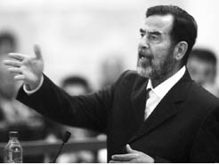
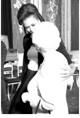
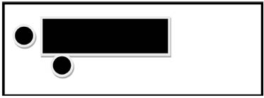
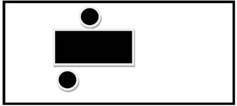
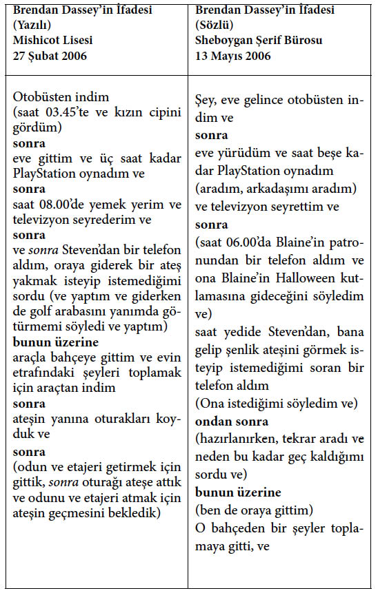
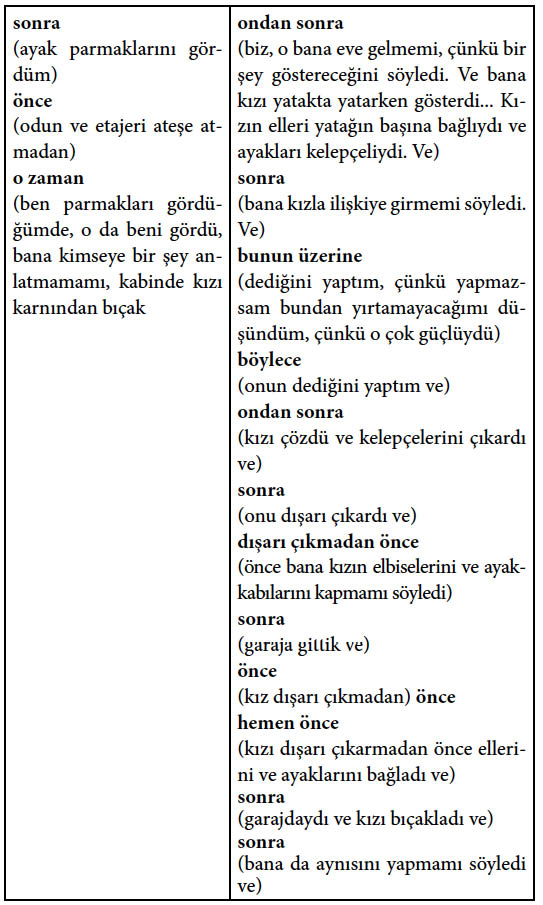
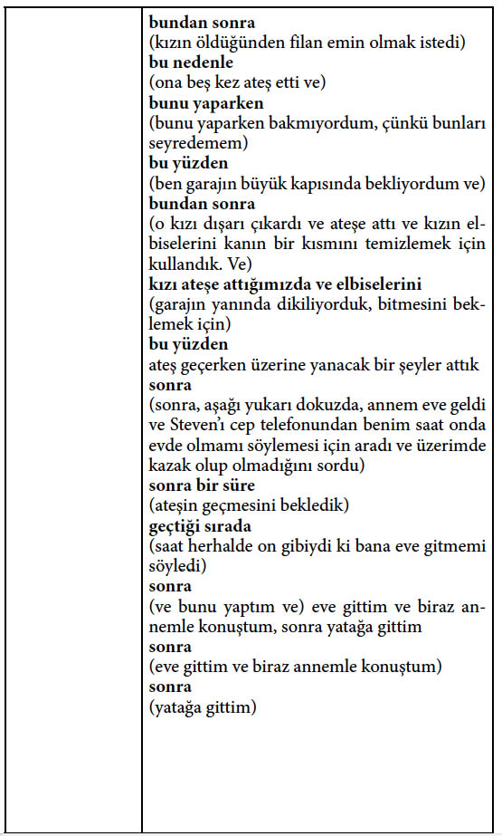

11. BÖLÜM
SÖZSÜZ İLETİŞİM VE GÜNLÜK HAYATTA UYGULAMALARI
Okumakta olduğunuz bölüme kadar, insan davranışı ile onun sözsüz iletişiminin bilimsel temelleri, örnekleriyle açıklanmaya çalışılmıştır. İnsan her ne kadar kapalı bir kutu olsa da, yaptığı her davranışın bir anlamı; verdiği her tepkinin evrimsel bir temeli vardır. Belli olaylar karşısında ortaya çıkan duygu hali ve bunun davranışlarına yansıması, uzak akrabalarıyla paylaştığı, zamanın imbiğinden geçen ve onun hayatını kurtaran durumlardır. Bu nedenle insanın davranışı, o farkında olmasa da, çoğunlukla kestirilebilir ve böylece iletişimin kalitesi artırılabilir.
Okuduğunuz kitap gibi bilimsel temelli kitapların son bölümü genellikle profesyonellere ayrılıyor. Çeşitli alanlarda, sözsüz iletişimi kullanan uzman kişiler görüşlerini, mesleki anılarını ve sözsüz iletişimin günlük hayattaki yansımalarını son bölümde aktarıyorlar. Ben de bu amaçla bazı uzmanlara bu konuyla ilgili olarak ulaştım ve birer makaleyle katkıda bulunmalarını istedim. Kendileri de bu konuda beni kırmayarak, bu kitaba özgü birer makale yazdılar ve yolladılar. ABD’nin FBI bürosu personeli, sözsüz iletişim ve yalan tespiti konusunda çok önemli eğitimler alıyorlar ve uzmanlaşıyorlar. Bunların aralarından sıyrılan ve önemli işlere imza atan emekli FBI ajanları Joe Navarro, John (Jack) Schafer ve Michael Roche, bu anlamda beni yalnız bırakmadılar. Aynı şekilde Joe Navarro’nun Avrupa temsilcisi, Dr. Mihaela Stroe de bir makaleyle katkıda bulundu. Yine iş yaşamında ve sözsüz iletişimde önemli bir figür olan Dr. Carol Kinsey Goman’da bir makale ile katıldı. Tabii ki, bunun bir sonu yok. Bu dostluklar geliştikçe, kitabın yeni baskılarında, yeni makalelere de yer vermek, hem ülkemizden, hem de yurtdışından uzmanlarla, okurları, ilgilileri ve profesyonelleri tanıştırmak isterim.
Sözsüz Davranış Psikolojisi Adli Görüşmelerin Anahtarı
Joe Navarro
Emekli FBI Özel Ajanı
(Copyright © 2012, Joe Navarro)
Milyonlarca yıl boyunca, atalarımız son derece tehlikeli bir dünyada, rahatça yaşadılar. Bunu, birbirlerine ihtiyaçlarını, gözlemlerini ve isteklerini doğru bir şekilde ileterek gerçekleştirdiler. Etkileyici bir şekilde bu iletimi, sözsüz iletişimi kullanarak başardılar. Kimyasal kokular (hâlâ sahip olduğumuz koku bezleriyle), fizyolojik değişiklikler (yüzün kızarması), jestler (elle işaret etmek), yüz ifadeleri (sorgulayan bakış), semboller (hayvan figürlerinin çizimleri), kişisel işaretler (dövmeler), hatta çıkardıkları sesler (çığlıklar ve homurdanmalar – ki sözel iletişim sayılmazlar), kullandıkları sözsüz iletişim biçimleriydi. Bunlardan bize miras kalanlar, DNA’mızın ve paleo (ilkel) beynimizin parçasıdır; bu nedenle hâlâ öncelikli iletişim biçimimiz, sözsüz iletişimdir.
Kollarımız, bacaklarımız, yüzümüz, hatta kalbimiz; tamamen beynimizin kontrolü altındadır. Beynimiz olmaksızın bir şey yapamayız ve iş sözsüz iletişime geldiğinde, beyin ile bedenin kendisi arasında bir bağlantı vardır. Sözsüz iletişim, zihnimizle (beynimizin içiyle) sıkıca bağlantılı olduğundan, bedensel (sözsüz) davranışlarımızı, beynimizden neler geçtiğini anlamak için kullanabiliriz.
Sözsüz davranışları araştırırken, bunu insan iletişiminin bilinçli ya da bilinçsiz bir şekilde beyin tarafından yönetildiğini bilerek yapmalıyız. Beyin araştırmaları, daha doğrusu psikoloji, bu bağlamda gerçekleştirilmelidir. Çünkü beyin araştırması; biyolojik, fizyolojik, duygusal, algısal ve ruhsal olarak karmaşık bir yapı içerir. Psikoloji ve sözsüz davranış ilişkisini analiz etmeye bu bakış açısıyla başlıyoruz. Sözsüz davranışın psikolojisine bakarken, psikolojinin ve sözsüz davranışların (iletişimin) nasıl iç içe geçmiş olduğunu anlamak için, yeni doğanların görüntüsünü ve acil ihtiyaçlarını gözümüzün önüne getirmemizde yarar var.
Bir çocuk dünyaya titreyerek ve ağlayarak gelir; bu durum anneyi, bebeğini kucaklaması ve soğuktan koruması için harekete geçirir. Bebeğin ısınma gereksinimi bu sayede derhal yerine getirilir ve bebek doğal bir şekilde ilk mesajını sözsüz olarak (titreyerek ve ağlayarak) başarılı bir şekilde iletmiştir. Bu ilk ısınma ihtiyacından, gelecekte ortaya çıkacak olan beden ile beyin arasındaki iletişim ve etkileşimi gözlemlemek için, önümüze bir pencere açılır. Bahse konu öncelikle sözsüz ve sonrasında sözlü olmak üzere etkili iletişim repertuvarı, insanın hayatta kalmasını sağlayacak şekilde ve yıllar içerisinde titizlikle oluşturulur.
Ağlama ve titremeyi, bebeğin daha anne karnında öğrendiği bir davranış olan parmak emme takip eder. Bu, beynin sakinleşerek huzur bulmak istediğinde başvurduğu, rahatlatıcı bir harekettir. Sakinleşme ihtiyacında olan beyin, henüz daha bilinmeyen sebeplerden dolayı, fiziksel vücut ile (bu durumda başparmak ile) etkileşime girecek ve böylece vücut kendi iç dengesini sağlayacaktır. Parmak emme hareketi, gelecekte mutluluk hormonu olan endorfinin (uyuşturucu benzeri maddelerin) beyinde salgılanması için binlerce kez tekrar edilecektir. Ağız yoluyla yeteri kadar tatmin edilmiş olan çocuk, aynı zamanda kendisini gözlemleyen annesiyle iletişim kurmaktadır. Çocuk büyüdükçe, kendisini stresli durumlarda sakinleştirecek başka yatıştırıcı davranışlar geliştirir. Bazıları açıkça kendisini belli ederken (sakız çiğnemek, kalem ısırmak, dudaklara dokunmak vb.), bazıları o kadar da açık değildir (saçla oynamak, yüzü ovuşturmak, boyuna masaj yapmak gibi). Neticede bunlar, beynin aynı ihtiyaçlarına hizmet eder; yani kendi vücuduna sinirleri harekete geçirecek (endorfin salgılatacak) dokunuşlarla beyni rahatlatır.
Yeni doğan, annesinin meme uçlarına, beceriksizce saldırır. Başını süt bezlerine doğru ittirir ve böylece burnundaki çok hassas olan koku sinirlerini hisseder. Bebek annesini belli bir ritimle emerken, ellerini içgüdüsel bir şekilde memelere doğru bastırır ve masaj yapar. Bu sayede hem süt üretimine yardımcı olur hem de annesinin rahatlamasına ve anneye iyi gelen oxytocin içeren kimyasalların salgılanmasına yol açar. Bu, anne ile çocuğun daha sıkı bir şekilde birbirine bağlanmasının sebeplerinden biridir.
Anne ile çocuğun birbirine bağlanma süreci, sıklıkla ön-sosyalleşme, yani sosyal uyumun başlangıcı olarak değerlendirilir. Bu hem fiziksel bir süreçtir hem de psikolojik. Emzirme sürecinden, çocuk ile anne, birlikte faydalanır. Çocuk beslenmiş olur. Anne ise çabalarının ödülünü alır: Süt salgılanır, süt bezlerinin ve güçlü endorfinlerin baskısından kurtularak rahatlar; çocukla birlikte anneyi de sakinleştirir.
Böylece çocuk anne kucağında keyifle iletişim kurmaya başlarken; anne de çocuğunun davranışlarını gözlemlemeye ve en belirsiz hareketinin anlamını dahi çözmeye başlar. Bu dönemde birbirlerine yakın olmak, anne ve çocuğun birbirlerini anlamalarını ve daha verimli iletişim kurmalarını kolaylaştırır. Anne kısa sürede çocuğun açlık, üşüme, tiksinme, hastalık ya da mutsuzluk gibi duygularını yansıtan ve onun hayatta kalması için çok önemli olan çeşitli ağlama seslerinin, yani sözsüz iletişiminin ne anlama geldiğini öğrenir. Benzer şekilde çocuk, 72 saat gibi kısa bir süre içerisinde annesini izlemeye ve gözlemlemeye; hem yüz kaslarını geliştirmek hem de iletişim ihtiyaçları ve duygu ifadelerini iletmek için onun yüz ifadelerini taklit etmeye başlar. Doğar doğmaz olmasa da günler içerisinde, ihtiyaçlarımızı ve duygularımızı iletmeye, ağlayarak, içimizi çekerek ve gülümseyerek başlarız. Bunun sonucu olarak da, çocuk ihtiyaçlarını, arzularını ve niyetini işaret eden daha karmaşık mesajları iletebilir.
Davranışlar, hem anne babalar, hem de çocuklar tarafından karşılıklı olarak anlamlandırıldığı ve teşvik edildiği için, birbirleriyle daha doğru bir iletişim kurmayı öğrenirler. Bunun sonucu olarak da, çocuk başka bir dilde bile olsa konuşulan sözcüklere tepki verir. Hal böyle olunca, kelimelerin nasıl konuşulduğu ve anlaşıldığı (ses tonu, yüksekliği, konuşma hızı, duygusu, göz teması ve duruş), kelimenin kendi içeriğinden daha fazla önem kazanır. Konuşmanın sözsüz unsurları, mesajın psikolojik özü itibariyle, yaşamımız boyunca bilinçli ya da bilinçsiz olarak önemini koruyacaktır. Kelimelerin söyleniş tarzından, rahatlık, rahatsızlık ya da ilgisizlik mesajları alınacaktır.
Anneyle yakın iletişimin sıcaklığından, çocuk sosyalleşmek için başkalarıyla iletişim kurma biçimlerini öğrenecektir. Çocuğun, bir şeye karşı hoşnutluğunu ya da hoşnutsuzluğunu sözsüz olarak iletmesi için, ne bir kullanma kılavuzu vardır, ne de bununla ilgili talimatlar. Bu beceri, çocuğun doğasında vardır. Hoşlanmadığı bir şey hissettiğinde, beyni kendi arzusu dışında gözbebeklerini küçültür ve bedenini hoşlanılmayan şeyden uzağa çevirir. Bu tür belirsiz davranışlar, bizim hayatta kalma mekanizmamızın (limbik sistem) parçasıdır. Böylece çocuğun beyni, çocuğun bedenini kullanarak, olumsuz duygu ve düşüncelerini ailesinin ve arkadaşlarının da kısa sürede anlayabileceği şekilde hatasız bir biçimde aktarır. Örneğin çocuğun gövdesi yemek masasından uzak durursa ve ayakları en yakın çıkışı gösterirse, anne hiç düşünmeden çocuğun rahatsızlığını, yani bu yemekten hoşlanmadığını ve “Yemeği yemeyeceğim!” mesajını anlayacaktır. Bu rahatsızlık ifadesi, kafasının içindekini tek kelime bile söylemeden yansıtacaktır. Ayakların dönme şekli dürüstçe, çocuğun aklındakini bildirdiği gibi; soruşturmacı görüşülen kişiye zor sorular yönelttiğinde, onun ayaklarının da aynı şekilde çıkışı göstermesiyle, benzer rahatsızlık ipuçları sağlayacaktır.
Öte yandan, beyin bir şeyden hoşlandığında, bilinçaltı çocuğu bu duyguları iletmeye zorlar. Bu sayede, anne sabah çocuğunun odasına girdiğinde, çocuğun gözleri kocaman açılır, gözbebekleri büyür, yüz kasları tamamen gülümsemesine izin verecek şekilde rahatlar ve başı, boynunun savunmasızlığını gösterecek şekilde yana doğru eğilir. Bu memnuniyet davranışları sonraki yıllar boyunca, arkadaşlık kurma ve geliştirme, benzer şekilde flört etme durumunda ortaya çıkacak; türün çoğalmasını sağlayacaktır.
Beynin, duyguların ifadesi adına fiziksel hareketi gerektirmesi, birçok açıdan harikuladedir. Öfke, üzüntü, korku, şaşkınlık, mutluluk ve tiksinme sözsüz olarak ifade edilir, evrensel olarak tanınır ve hayati öneme sahiptir; böylece konuşamasak bile anlaşılabiliriz. Beynimiz öylesine beceriklidir ki, doğuştan duyma özürlü olan ve yetişkin telkinleri olmaksızın büyüyen çocuklar, karmaşık düşüncelerini başkalarına iletebilmek için kendi “işaret” dilini geliştirecektir.
Kafamızın içindekiler ve bu duyguların sözsüz iletiminin bu denli birbirine bağlantılı olması bize özgü değildir. Türün devamını sağlamak için, tüm hayvanlar bunu yapar. Fakat beynimiz, duygulardan daha fazla bilgiyi sözsüz olarak iletir. Örneğin beyin sağlıklı ve duygular kontrol altındayken; iyi, sağlıklı ve mutlu görünmemizi temin eder. Duygular ve beyinde bir rahatsızlık söz konusuysa (evsiz bir şizofreni düşünün); bedenimiz ve benzer şekilde hayvanlar bakımsızlık, duruş bozukluğu, özensiz bir görünüm ve dengesiz davranışlarla rahatsızlığını iletir. Sözsüz olarak tüm yansıtılanlar, psikolojimiz ve sözsüz iletişim arasındaki harikulade bağlantıyı gösterir. Kısacası bedenimiz, ne hissediyorsak onu eleverir.
Tehlikeli Bir Dünyaya Karşı İnsan Tepkisi
Sözsüz davranışı gerçekten anlamak için, beynimizin nasıl geliştiğini ve bölündüğünü anlamamız gerekir. Kafatasının içerisinde, bizimle birlikte evrim geçirmiş olan üç farklı yapı vardır. Beyin sapının üzerinde, bizim en eski sürüngen beynimiz vardır. Beyin sapının üst kısımları, omurilik ve beyincikle birlikte, kas hareketleri, solunum, denge ve kalp aktivitesi gibi iç beden fonksiyonlarını idare eder. Beynin bu parçasının bilinci, kendi kendinin farkındalığı ya da dış dünyaya ilişkin bir hafızası yoktur. Çevreye karşı duyarlıdır ve sempatik sistem yoluyla vücudun iç dengesini düzenler. Beynin bu en ilkel kısmı, diğer beyin aktiviteleri hasar görse de bizi “bitkisel hayatta” yaşatmaya devam eder. Bu önemlidir, çünkü başkalarında gördüğümüz davranışları anlamak, bu davranışı beynin hangi kısmının yerine getirdiğini anlamayı gerektirir. Örneğin, birisini sarhoş ve dengesini kaybetmiş gördüğümüze, bu alkol yüzündendir ve merkezi sinir sistemi yatıştırıcısı doğrudan beyinciği etkilemektedir. Beynimiz üç parçadan oluştuğu halde, maalesef birçok insan onu tek parçalı bir organ olarak düşünür.
Omurilik ve beyincik üzerinde etkimiz olmadığı için, beynin bu kısımlarının kontrol ettiği davranışlar doğru olma eğilimindedir. Bir başka deyişle, bu davranışlara çok daha fazla güvenebiliriz, çünkü onları zihinsel olarak kontrol edemeyiz. Sahte bir gülümseme yapabiliriz ama sahte bir biçimde sarhoş olamayız. Omurilik, beyincikle birlikte uyarılma sonucu kalp atışlarını hızlandırmaya ya da stresli bir durum karşısında elleri titretmeye karar verdiğinde, sözcüklerin aksine bu davranışlara rahatlıkla güvenebiliriz.
Bunun bir örneği, Aralık 1999’da, dikkatli bir gümrük memuresi“Milenyum Bombacısı”nı engellediğinde görülmüştür. Kanada’dan ABD istikametine giriş yapmakta olan Ahmet Reesam’ın sinirli davranışlarını ve aşırı derecede terlemesini fark eden memure Diana Dean, kendisine arabasından inmesini ve sorulacak sorulara cevap vermesini istedi. Bunun üzerine Ahmet Reesam kaçtı ancak kısa sürede yakalandı. Arabada yapılan aramada, polisler patlayıcılar ve zamanlayıcı cihazlar buldular. Reesam, sonunda Los Angeles Havalimanı’na bombalı saldırı yapmaya teşebbüsle suçlandı. Memure Dean’ın fark ettiği, büyük bir stres sonucunda beyincik ve beyin sapının ortaya çıkarttığı sinirlilik ve terleme haliydi. Bu davranışlar sahici olduğu için, memure Dean doğru ve hassas gözlemine güvendi ve adamın peşine düştü. Bu, ne olup bittiğine dair psikolojinin ve beynin içinde olanların birbirleriyle bağlantısını ve kendisini nasıl sözsüz olarak belli ettiğini gösterir. Bu örnekte, yakalanma korkusu içerisindeki olası bir bombacı, ne düşündüğünü ve niyetini sözsüz olarak belli etmiştir.
Limbik Beyin
Evrim sürecinde, bizim sürüngen atalarımız, beyinciğin ön kısmında, bizim toprak üzerinde daha başarılı hareket edecek bir tür olmamızı sağlayacak bir biçimde, modüller geliştirdiler. Bu bizim erken duygusal hafızamızı ve tepki sistemimizi talamus, amigdala, hipotalamus ve hipokambus ile birlikte oluşturdu; bu kısımlar diğer yapılarla bir arada limbik beyin ya da “limbik sistem”i meydana getirdi. Bu bölüm, genel olarak memeli beyni olarak adlandırılır. Önceki su yaşamına göre çok daha korkutucu ve karmaşık olan karasal yaşamla başa çıkabilmek için memeli beyni evrim sonucu ortaya çıkmıştır. Limbik beyin bizi canlı tutan ve hayatta kalmamıza en fazla etkisi olan kısımdır. Dışarıdan gelen uyaranlara tepki göstererek, olumsuz olayları (sobada yanan parmak veya acı veren kelimeler) ya da olumlu duygusal olayları hafızasına alır. Bu beynin duygusal/tepkisel kısmı, bizim tehlikeli ve sıklıkla acımasız dünyada hayatta kalmamızı sağlamıştır.
Limbik sistemin güzelliği ve ayrıcalığı, dış dünyaya herhangi bir düşünme ya da değerlendirme yapmaya gerek duymadan tepki vermesidir. Örneğin, limbik sistem vahşi bir hayvanı bir kez kaydettiğinde, bu bizim duygusal hafızamıza çakılır (amigdala ve hipokambusun işbirliğiyle), böylece hayvanı bir kez daha gördüğümüzde anında tepki veririz. Sınıfın zorba çocuğuna yirmi yıl sonra bile rastlasak, yıllar önce hissedilen olumsuz duygular limbik sistem sayesinde bir kez daha sızar. Bu, bizim canımızı yakan kişiyi unutmamızın neden zor olduğunun sebebidir; çünkü düşünmekten çok tepki vermek üzerine evrimleşmiş olan ilkel limbik sisteme kaydedilmiştir. Bize zarar veren bir şeyi öğrendiğimizde, onun hakkında düşünmeden tepki veririz.
Diğer yandan, limbik sistem olumlu duyguları da kaydedecek şekilde çalışır. Bir dost ya da tanıdık yüz, psikolojik olarak sevgili annemize verdiğimiz tepkiye benzer bir tepki göstermemiz için, limbik sistemin gardını düşürmesine yol açacaktır. Geçmişten tanıdık bir kimseye verdiğimiz ilk reaksiyon da limbik sistemin kontrolündedir. Karşımızdaki yüzü tanıdığımız anda, limbik sistem derhal kasların gevşemesine izin verir; duruşumuz daha rahat olur; yüz kaslarımız sakinleşir ve gözbebeklerimiz büyür. Eski bir arkadaş için duyduğumuz coşku da limbik sistemin kontrolündedir.
Dünyanın araştırmacıları ve gözlemcileri için, limbik beyin psikolojik olarak sözsüz iletişimi anlamanın anahtarıdır. Neden? Çünkü limbik beyin, yani tepkisel beyin çevremizdeki dünyayla dürüstçe uğraşır. Bizim hayatta kalmamızla ilgili olarak, dünyaya anında, çaba harcamadan ve çabucak tepki verir. Araştırmacılar olarak gerçekten de daha fazla sorgulayamayız. Limbik beynimiz mola vermez, her zaman “açık”tır, yaşamımızdan tek başına sorumludur. Beynin diğer parçalarına, davranışa dönüşecek sinyaller verir. Bunlar fiziksel olarak ayaklarımızda, gövdemizde, kollarımızda, ellerimizde ve yüzümüzde belirdiğinde gözlenebilir ve yorumlanabilir. Ve sözcüklerin aksine, bunlar sahicidir.
Donma Tepkisi
Bir milyon yıl önce insansı maymunlar Afrika çayırlarını geçerken, her yer yırtıcılarla doluydu. Onlar büyüktü, daha güçlüydü ve hızlıydı. Ön insanların başarılı olabilmeleri için, amfibik öncülerimizden evrimleşmiş olan limbik beyin, yırtıcılarla karşılaştırınca küçük olan vücutlarını ve güçsüzlüklerini telafi etmek için stratejiler geliştirdi. Bu strateji, bir yırtıcıyla karşılaştığında ya da bir tehlike durumunda limbik sistemin ilk andaki donma tepkisiydi. Hareket dikkat çeker; tehlike durumunda hareketsiz durma ile limbik beyin hayatta kalmak için muhtemel en uygun tepki şeklini öğrenmiştir. Hayvanların çoğu, özellikle yırtıcılar hareketi fark eder ve tepki verir. Tehlike karşısında, donma becerisi anlamlıdır. Yırtıcıların çoğu, aslında benim kedilerimin yaptığı gibi “kovala, yakala, ısır” mekanizmasını işleterek kaçan hayvanları kovalar.
Donma tepkisini ayılardan maymunlara, ördeklere kadar pek çok başka hayvanda da görürüz. Anne ayı durduğunda, yavruları da aynı şeyi yapar, hatta hareket ettiğinde bile hareketsiz kalmaya devam ederler. Anne ördek bir sorun fark edip çömeldiğinde, yavruları en ufak bir ses çıkarmadan onu taklit eder. Yavru maymunlar da ya hareketsiz kalacaklar, ya da annelerine sarılacaklardır. Primatlar ve hatta küçük çocuklar arasında görülen kucaklama davranışı (annenin elbiselerine ya da kollarına sarılmak), limbik donma mekanizmasının bir parçasıdır. Yaşımız büyüdükçe artık ebeveynlerimize sarılmayız ama onun yerine tehdit karşısında kendimize ya da bir eşyaya sarılma davranışı geliştiririz. Ben sorgulamayı yürütürken çoğu zaman şüphelinin aniden sandalyenin kolunu ya da masanın kenarını tuttuğunu gözlemlerim, çünkü yeni ortaya konulan delil yüzünden kendini tehdit altında hissetmiştir.
Donma hareketi, sıklıkla araba farına yakalanmış geyik etkisiyle ilişkilidir. Yapmamamız gereken bir şeyi yaparken yakalandığımızda, harekete geçmeden önce anlık olarak donarız. Bu, genellikle ani bir hareket yapmadan önce düşünme fırsatı verir. Odanızda bu kitabı okurken, içeriye saldırgan bir aslan ya da kurdun girdiğini bir hayal edin. Olası tepkiniz donmak olacaktır. Bu otomatik tepkiyi birinci savunma hattımız ve hayatta kalmaya yönelik elimizdeki ilk araç olarak geliştirdiğimizi bilmek ne kadar rahatlatıcıdır. Günümüzde bu hareket, caddede yürüyen bir adamın geri dönüp evine gitmeden önce, aniden durup avuç içiyle alnına vurmasında masumca kendini belli eder. Bu anlık duruş, tehdit ister yırtıcı bir hayvandan gelsin, ister aklına gelen bir şeyden, beyne hızlı bir değerlendirme şansı verir. Her iki durum da zihnin uğraşması gereken potansiyel tehlikeli bir durumdur.
Şaşırtıcı bir şekilde, yalnız karşımıza çıkan fiziksel ya da görsel tehlikeler karşısında değil; bizi tehdit eden işittiğimiz şeyler karşısında da donarız. Azar işiten insanların çoğu donar. Aynı şeyi ifade alma ortamında da görürüz. Benim kişisel olarak, soru sorduğumda şüphelinin fırlatma koltuğunda oturan pilot gibi donup kaldığı yüzlerce davam oldu. Bu hareketi her gördüğümde, şüphelinin suçlu olduğu ortaya çıktı. Sorularım ya da analizim bir tehdit içerdiği için, bir milyon yıl önce insanların aslanlar karşısında donduğu gibi, limbik beyin sorgulama boyunca kişinin hareketini dondurur.
Limbik donma hareketine benzer bir durum, sorgulama esnasında nefesini tutan ya da nefes alıp verişi belirsizleşen insanlarda kendini gösterir. Yine bu da, tehdide karşı ilkel bir tepkidir. Bu ifade veren tarafından fark edilmez ama bizim tarafımızdan kolayca gözlemlenebilir. Çoğunlukla onlara rahatlamalarını, nefes almalarını hatırlatmak zorunda kalırdım. Poligraflara (yalan makinesi uzmanı) göre, yalan makinesine bağlanan insanlar test esnasında strese girdiklerinde görülen en yaygın tepki nefes tutmadır ve çoğunlukla nefes almaları hatırlatılır.
Tehditle karşılaşan insanlardaki donma ihtiyacıyla uyumlu olarak, insanlar sıklıkla ayaklarını güvenlik pozisyonunda tutacaklar (sandalye altında, ayaklar bacaklar kenetli vaziyette) ve uzun bir süre bu pozisyonda kalacaklardır. Bunu gördüğümde bir şeylerin yanlış olduğunu ve bunun incelenmesi gereken limbik bir tepki olduğunu anlarım. Bu kişi yalan söylüyor da olabilir, söylemiyor da, bunu bilemem; ama şundan emin olabilirim ki bir şeyler onu strese sokuyor ve benim bunu takip etmem gerekir. Bu kişiyi strese; ifadeyi alan, ifade süreci, ifadenin alındığı ortam, belli bir soru sokmuş olabilir; ya da yakalanmaktan korkmuş olabilir. Suçludan şüpheliyi ayırmak için bu stresin nedenini bulmak, ifadeyi alana kalmıştır.
Limbik beynin bizi korumak için uyguladığı yöntemlerden biri de görüntümüzü küçültmektir. Dükkân hırsızlarının takibinde, dikkati çeken bir konu, sıklıkla görünmez olmaya çalışır gibi görüntülerini küçültmeye ya da hareketsiz kalmaya çalışmalarıdır. Psikolojik olarak açıkta saklanmaya çalışarak çevrelerine hâkim olmak isterler. Bu tabii ki işe yaramaz. Gerçekte, herkesin kollarını rahatça hareket ettirdiği ve eğilmekten çok dik durduğu bir alanda, çok daha fazla dikkat çekerler.
Yalancılar hakkındaki yanlış efsanelerden biri de, onların ellerini ve kollarını çok daha hareketli kullanmaya eğilimli olduklarıdır. Bu kesinlikle doğru değildir. Gerçekte yalancılarda gözlemlenen özelliklerden bir tanesi, yalancıların doğru söyleyenlere göre daha az jest yaptıkları, daha az dokundukları, kollarını ve bacaklarını daha az hareket ettirdikleridir. Bu, tehlikeyle karşılaşma halinde (yalanının yakalanması gibi), dikkat çekmemek için az hareket etmek gibi ortaya çıkan limbik tepkilerle uyumludur. İfade alma esnasında, yalan söyleyen kişilerdeki hareket azalması ve doğru söylerlerken hareketlerdeki artış, oldukça dikkat çekicidir. Bu değişimler, limbik sistemin kontrolü altında olduğu için gözlenmesi faydalıdır, daha güvenilirdir ve kişinin kafasının içerisinde neler olduğunu işaret eder.
Kaçma Tepkisi
Limbik beynin ikinci tepkisi, tehditten kaçmaktır. Bu genellikle, kişinin herhangi bir tehdit ya da rahatsızlık veren durumla arasına; geriye yaslanma, engelleme ya da basitçe kaçma yoluyla mesafe koyma şeklinde görülür. Kaçmak, uygulanabilir olduğunda elbette pratiktir ve beynimiz binlerce yıldır bu taktiği, tehditten kaçma mekanizması olarak kullanmıştır.
Modern dünyada, vahşi hayatta değil, şehirlerde yaşadığımız için, tehditten koşarak kaçmak zordur. Duvarlar, tel örgüler, yoğun kalabalık caddeler, hatta güvenlik kameraları böyle bir davranışı engeller. İfade alma sırasında, ifadesi alınan odadan kaçamaz, bu onu suçlu gösterir. Bu nedenle limbik beyin, tehditlerle başa çıkmak için, kaçma dışında başka eşsiz teknikler geliştirmiştir. Hareketler ifade alma esnasında kısıtlı olduğundan, limbik beyin, soruşturma yapanın sorularını engellemek ya da kendisini uzaklaştırmak için daha başka incelikli davranışlara yönelir.
Tıpkı bir çocuğun masadaki yemeğe sırtını dönmesi gibi; suçlu kişi de, kendisini tehdit eden soruları soran soruşturmacıya bu esnada sırtını dönebilir. Engelleme davranışı, gözleri kapama, gözleri ovuşturma ya da elleri yüzün önünde tutma şeklinde kendisini gösterebilir. Kişi kendisini, geriye yaslanarak, kucağına nesneler (sırt çantası) yerleştirerek ya da ayaklarını en yakın çıkışa yönelterek soruşturmacıdan uzaklaştırabilir. Sorgulama ya da görüşme boyunca gözlemlenen uzaklaşma davranışları genellikle limbik tepkilerdir ve kişinin sorulan sorulardan hoşlanmadığını ya da kendini tehdit altında hissettiğini işaret eder. Yine de bunlar, sorulan sorulardan kaynaklanan stresin kesin işaretleridir ancak yalan işaretleri değildir.
Limbik beyin duyguları kontrol ettiği için, aynı zamanda düşündüklerimize, hissettiklerimize ve duygularımıza bağlılığımızı da kontrol eder. Dedektifler için çok bilinen bir gözlem, yalan söyleyen kişilerin yaptıkları açıklamaların vurgu yönünden eksik olduğudur. Vurgu, duygusal bağlılık gerektirir. Yalancılar, limbik beynin duygusal bağlılığından türemiş olan bu onay eksikliğini duyarlar. Limbik beyin, daha az güvenilir olan neo-korteksin (düşünen beynin) söylediklerini desteklemediğinde, ifadeler belirsiz, vurgusuz, hatta boğuk olur. Bu bağırarak ve yumruğunu masaya vurarak “Ben yapmadım!” diyen adamın yanında, daha yumuşak bir biçimde “Ben yapmadım...” diyen adamın sözlerinde kendini gösterecektir. 25 yıllık kariyerimde yürüttüğüm binlerce sorgulamadan sonra, asla bir yalancının masumiyetini dramatik bir biçimde savunduğunu görmedim. Soruşturmacılar için vurgu eşittir doğruluktur. Vurgu yoksa daha detaylı sorgulama gerekir. Gerçek vurguyu gördüğümüzde yerçekimiyle mücadele hareketlerini görürüz; bunu yalancıların pek çoğu yapamaz, çünkü söyledikleri şeye inanmazlar.
Savaşma Tepkisi
Bize aşina olan tepkilerin sonuncusu, savaşma tepkisidir. Gerçekten tehdit edildiğimizde, kaçacak yer yoksa ve donmak faydasızsa, savaşmaktan başka bir seçeneğimiz yoktur. Diğer memeliler gibi, bizim türümüz de tehditle mücadele etmek için korkuyu şiddete çevirmeyi öğrenmiştir. Kaçmak gibi şiddet de modern dünyada pek uygulanabilir bir davranış değildir ve potansiyel bir tehlikeyle boğuşmak çok akıllıca olmayabilir. Bu nedenle, limbik beyin, ilkel savaşma metotlarının ötesinde stratejiler geliştirmiştir. Savaşmanın bir türü, modern anlamıyla tartışmak ya da karşı suçlamalarda bulunmaktır. Tartışma yoluyla meselenin özünden uzaklaşılır ve görüşme rayından çıkar. Kontrollü şiddet faydalı olabilir. Yalnızca “pasif saldırgan (saldırganlığı pasif bir şekilde kontrol altında tutmak)” olmaktansa, bunu daha elle tutulabilir bir forma dönüştürerek kendimizi savunmak amacıyla tartışmak, başka memelilerden farklı olarak geliştirdiğimiz bir yetenektir. Fark edilmesi zor olduğundan harika bir tekniktir, çünkü “savaşma (tartışma)”, daha gürültücü, daha histerik, daha manipülatif, daha zeki ya da yetenekli biri tarafından kazanılabilirken ne için olduğu çoğunlukla anlaşılmaz. Soruşturmacıyla tartışmaya giren beyin sahip olduğu suçluluk bilgisiyle uğraşmak zorunda kalmaz ve aynı karşı saldırıda olduğu gibi onu savunma pozisyonunda bırakır. Tartışma, limbik beynin işitsel olarak hissettiği baskı ve gerginliğin kalkmasını sağlar.
Bir başka savaşma yöntemi yalan söylemektir. Yalan söylemek, daha önce de belirttiğim gibi sosyal uyum aracıdır. Soruşturmacının kabul edebileceği bir yalan söylemek, kişinin üzerindeki gerginliği azaltır, çünkü soruşturmacının aldığı bilgi, onun geri çekilmesine ya da kolayca kabul etmesine neden olabilir. Maalesef soruşturmacılar sıklıkla gevezeliği (konuşma, hikâye anlatma) gerçekle aynı kefeye koymaktadır. İfade verenin söylediği her şey mutlaka doğrulanmalıdır.
Hem yalan söyleme, hem de tartışma tekniği, beynin tehditlerle mücadele etmek için, dövüşmekten çok konuşmak üzerine geliştirdiği karmaşık yöntemler olarak değerlendirilmelidir. Her ikisi de, kişinin psikolojisini ve niyetini yansıtan sözel bir aktivitedir. İşbirliğinden çok direnme ve kafa karıştırma, soruşturmacının dikkatini daha fazla çekmelidir.
Limbik Engelleme
Limbik tepkiler, olumsuz sonuçlar da verebilir. Eğer tehdit büyükse, limbik beyin kişinin hatırlamasına, hatta bir cümleyi tamamlamasına ya da düşünmesine engel olacak şekilde zihinsel aktiviteyi kontrol altına alabilir. Bu, genellikle stres karşısında gözlemlenir. Neden bir tartışma sonrasında, aslında o esnada söylemeniz gereken en akıllıca ve zekice cümlelerin aklınıza geldiğini hiç düşündünüz mü? Bunun nedeni, stres altında, limbik engelleme nedeniyle mantıklı düşünememeniz ve anahtarlarınızı nereye bıraktığınız gibi en basit şeyleri bile hatırlayamamanızdır.
Bir silahlı çatışma ya da şiddetli bir karşılaşma sonrasında, kişi ne olup bittiğini tam olarak hatırlamayabilir. Tehdit karşısında, limbik sistem duruma uyum sağlamak için beyinsel aktiviteyi (yüksek sesle düşünmeyi) durdurur. Bu zor durumla baş edebilmek için, limbik sistemin verdiği tepki nedeniyle kısa ve uzun dönem hafıza ciddi şekilde zarar görebilir. Hatta bu engelleme sayesinde, kişinin en azından o an için bu korkunç durumu yaşamaktan kurtulduğuna dair tahminler söz konusudur. Limbik sistem bizi korumak için bir kere harekete geçtiğinde, bunun bedeli hafızamız olur.
Benzer şekilde, soruşturmayı yürüten kişi, cinayetin fotoğrafını ortaya koyduğunda, ifade veren kişinin kekelemesine, hatta konuşamamasına neden olacak kadar kişiyi tehdit edebilir. Suç bilgisi, bazı durumlarda limbik sistemin düşünmeyi durdurarak kişinin aptalca şeyler söylemesini engelleyecek kadar strese neden olabilir.
Neo-Korteks
Beynin, dikkate almamız gereken son bölümü, neo-kortekstir. Bu bolüm, yüksek seviyede algı ve hafızayı kontrol eder. Hatırlama, hesaplama, analiz etme, inceleme ve kavrama gibi, dünya üzerinde başka bir beynin yapamadığı şeyleri yaparak, bizi Ay’a çıkaran, düşünen beyindir. Beynin bu yeni bölümü, bizi diğer canlılardan ve bizim kadar beyin kapasitesine sahip olmayan ilkel atalarımızdan ayırır.
Suçluyla uğraşan bir soruşturmacı için, bu en az güvenilir bölgedir, çünkü burası beynin yalan söyleyen bölümüdür. Limbik sistem, varlığından rahatsız olduğu birisini gördüğünde, gözleri bilinçsiz olarak kısarken, neo-korteks gerçek duyguları hakkında yalan söyleyebilir. Beynin Brocca alanına (konuşma bölgesine) hükmeden neo-korteks, hiç de öyle hissetmediği halde, bu kişiye “Merhaba, seni görmek ne güzel!” diyebilir. Gayet inandırıcı bir şekilde “Şu kadınla hiçbir şekilde cinsel ilişkiye girmedim!” diyebilir. Daha da kötüsü, soruşturmacıya son derece ikna edici bir sesle “Onu ben öldürmedim!” diyebilir. Gerçekte yalan söyleyebilen, kimi zaman da oldukça inandırıcı olabilen, düşünen beyindir. İş doğruluğa gelince, en güvenilmez kısımdır ve böyle olduğu akıldan çıkarılmamalıdır. Sonuçta, yalan sosyal bir araçtır ve hepimiz yalan söylemişizdir.
Neo-korteks yalan söylemek için son derece becerikli ve eğilimli olduğundan, herhangi sorgulanan birinden ya da bir şüpheliden alınan bilgi, mutlaka kanıtlarla desteklenmelidir. Yönlendirici sorulardan her zaman için kaçınılmalıdır, böylece görüşülen kişilerden üretilmiş değil, gerçek bilgi alınabilir. Yüksek beynin kaçınma, yalan söyleme ya da kafa karıştırma kapasitesinin olduğu bilinerek, sorular kişinin ürettiği değil gerçek bilgiyi kendi isteğiyle ve soruşturmacının soruları ile yorumları doğrultusunda vermesini amaçlamalıdır. Zayıf soruşturmacılar, çoğunlukla görüşülen kişiden aldıkları bilgiden daha çoğunu ağızlarından kaçırırlar, bu da soruşturmaya zarar verir ve sahte itiraflara neden olur.
Yalan söylemek, psikolojik olarak “sosyal uyum aracı” olduğundan, biz bu potansiyeli daima dikkate almalıyız. Maalesef, bu kitabı okuyan birçok insan, kolluk görevlileri de dahil olmak üzere, yalan tespitinde yazı-tura atmaktan (%50-%50) daha başarılı olmayacaklardır. Bu nedenle, doğru ifadeleri çözebilmek için beynin nasıl çalıştığını anlamak ve beynin üç ana bölgesinin sözsüz davranışa nasıl etki ettiğinin bilinmesi gerekir. Neticede, beynimizin içindekiler genellikle sözsüz iletişimimize ya da beden dilimize yansır. Ve beynimizin en güvenilir parçası, limbik sistem gibi çok eskiden kalma bölgelerin kontrolündedir. Kandırma İpuçları adlı kitap, saklı bilgiler ya da muhtemel yalanları tanımlamaya yardımcı olabilecek 215 limbik tepkiyi aktarmak için yazılmıştır.
Sonuç
Doğumumuzdan ölümümüze kadar, bedenlerimiz beyinle önemli bir bağlantı oluşturur. Yalnızca hayatta kalmanın acil ihtiyaçları için değil, aynı zamanda dış dünyayla iletişim kurabilmek için. Ve oldukça yeterli olan beynimiz sayesinde, olağandışı bir kusursuzlukla geliştirdiğimiz benzersiz sözlü iletişime rağmen, milyonlarca yıl sonra hâlâ ilkel bir şekilde sözsüz iletişim kuruyoruz. Duygulardan bedensel ihtiyaçlara, hoşnutsuzluklara, hastalıklara, statü gösterisine, niyetlere kadar, bedenimiz çeşitli seviyelerde iletişim kurabilecek şekilde zarif bir donanıma sahiptir. Sözsüz davranış üzerine yapacağımız titiz çalışmalarla, insanların düşüncelerini, duygularını, arzularını ya da niyetlerini ve bazen sakladıklarını anlayabilmemizi sağlayacak gizli zihin psikolojisi boyutuna, ciddi bir bakış elde edebiliriz.
***
Bu yazı, yazarın, Joe Navarro’nun izni olmaksızın değiştirilemez.
***
Joe Navarro, M. A.
www.jnforensics.com
25 yıl boyunca, Joe Navarro karşı istihbarat ve davranış değerlendirmesi analında FBI özel ajanı olarak çalıştı. Ulusal Güvenlik Departmanı Davranış Analiz Programı’nın kurucu üyesi olan yazar, aynı zamanda FBI’ın suç profil uzmanıdır – FBI’ın 100 yıllık tarihinde bu işi yapmış olan tek ajanıdır. Saint Leo Üniversitesi’nin yardımcı öğretim görevlisidir, aynı zamanda Wayne State University School of Medicine’de yılda bir ders verir. 2004 yılında, ABD’nin Bogotá, Kolombiya büyükelçisinin direktifiyle suç davranışının analizi için Latin Amerika’nın ilk multidisipliner suçlu profilleme birimini kurdu. Joe Navarro, birçok makalenin yazarıdır, Psychology Today katılımcısıdır ve Advanced Interviewing Techniques, Hunting Terrorists, Beden Dili, Louder Than Words, son kitabı Clues To Deceit (Indicii de înșelăciune: ghid practice) gibi kitapların da dahil olduğu birçok kitabın yazarıdır.
Yakın İlişki Kurmak
Mike Roche
Emekli Amerikan Gizli Servis Özel Ajanı
FBI özel ajanı George Piro’nun Irak Devlet Başkanı Saddam Hüseyin ile görüşmesi, işbirliği yapmak için pek bir nedeni olmayan herhangi bir mahkûmun görüşmesinden farksızdı. Zamanla Piro, eski diktatör ve savaş suçlusuyla yakın ilişki kurmayı başardı. FBI ajanı, Saddam’ın yüksek statüsünü ve kendine verdiği önemi kullandı ve bir bağ kurdu. Bu tekniği kullanarak, Piro onun kibrinin katmanlarını sıyırmayı ve işbirliği sağlamayı başardı.

George Piro, kendisini otoritenin yüksek bir pozisyonunda gösterdi. İlişkiyi güçlendirmek için kullandığı tekniklerden bir tanesini, Saddam’ın doğum gününde uyguladı. Normalde Irak için resmi kutlama günü olan o gün, artık takvimdeki herhangi bir gündü. Piro, annesinin hazırladığı Lübnan usulü pişirilmiş kurabiyeleri, Saddam’ın hücresine getirdi. Bu jest, kurduğu yakın ilişkinin seviyesini gösterdi ve iki düşman arasındaki güven duygusunu sağlamlaştırdı.
Ohio Eyalet Üniversitesi Psikoloji Bölümü öğretim üyesi Dr. Steven Reiss, on altı temel insan isteği olduğunu ileri sürer. Bu istekler, altı bin kişiyle yapılan görüşmelerden sonra belirlenmiştir. Bunlar, insanların iş dünyasındaki gerçek motivasyonel değerlerini gösterir.
Bu istekler; kabul görme, beslenme, merak, aile, onur, idealizm, bağımsızlık, bireysellik, düzen, fiziksel aktivite, güç, romantizm, tasarruf etme, sosyal ilişki kurma, statü, sakinlik ve intikamdır.
Eğer görüştüğünüz kişiyi, yukarıda sayılan bu isteklerin bazı yönleriyle bir araya getirebilirseniz, o kişiyi içsel motivasyonlarıyla vuracaksınız demektir. Eğer listeye dikkatle bakarsanız, büyük bir ihtimalle kendi içsel arzularınızı da fark edeceksiniz.
Dr. Reiss, bu çığır açan araştırmasında, kabul görmeyi on altı temel istekten biri olarak tanımlamıştır. Hepimiz, başkaları tarafından kabul görmek isteriz. Eğer görüştüğünüz kişiyle yakınlık kurabilirseniz, başarı için altyapı hazırlamışsınız demektir.
Ernest Hemingway’in bir sözü vardır: “İnsanlar konuştukları zaman, onları dinle. İnsanların birçoğu asla dinlemezler.” Bu, kişiler arası iletişimde, gözden kaçırılan bir konudur. Pek çoğunuz, “Tanrı’nın bize iki kulak ve bir ağız vermesinin bir sebebi var!” sözünü duymuşsunuzdur. Yapılan bir çalışmada, doktorlar hastalarının sözünü on sekiz saniye dinledikten sonra kesmişlerdir. Bu süre doktora, “Merhaba, ben öleceğimi düşünüyorum!” demeye bile yetmez.
Ben çok az konuşan, yalnızca birkaç soru soran ve cevapları aktif olarak dinleyen; fazla konuşmadıkları halde karşılarındaki kişi tarafından nazik ve çekici olarak tanımlanan insanlar tanıdım. Aktif dinleme, karşınızdaki insanın söyledikleriyle gerçekten ilgilendiğinizi gösterme yeteneğidir. Sık sık başınızla onaylayın ve konuyu daha fazla aydınlatmak için açıklayıcı sorular sorun. Konuşma süresinin yüzde altmış ya da yetmişinde göz teması sağlayın. Bu sizin ilginizi gösterir.
Bir Los Angeles polis memuru, ortağıyla birlikte, yüksek suç oranına sahip bir yerde devriye atıyordu. Silah sesleri duydular ve sonra bir kişinin dar bir sokakta koşarak kaçtığını gördüler. Memur da şüpheliyi koşarak kovalamaya başladı ve aynı zamanda telsizle merkeze konumunu iletti ve şüpheliyi tarif etti.
Bu çağrıyı alan polisler, derhal belirtilen konumun etrafında bir şerit oluşturdular. Bununla şüpheliyi emniyetli bölgede yakalamayı amaçlıyorlardı. Şüpheli yakalandığında, polislere aslında kendisini kovalayan polisi vurabileceğini, ama vurmadığını anlattı. Konuyu biraz deşince, bunun gerçek olduğu ortaya çıktı.
Vücuduna adrenalin dolan polis memuru, olay esnasında telsizden durumu anlatmaya devam ediyordu. Polis memurunun bilmediği, çalılıklarda saklanan şüpheliyi geçtiğiydi. Peki, şüpheli memuru neden öldürmemişti? Ateş eden kişi yakalandığında, polislere bunun sebebinin, kovalayan polisin kendisine sürekli saygılı davranması ve seslenmesi olduğunu anlatmıştı.
Kariyerimin en başlarında öğrendiğim bir gerçek, insanların yüzde doksan dokuzunun, kendilerine saygılı yaklaşanlara olumlu karşılık vermesi olmuştur. Her zaman böyle karşılık vermeyen yüzde birlik bir grup çıkar. Onlar için yapabileceğiniz fazla bir şey yoktur. Yüzde birlerin çoğu saygı kavramından anlamazlar ve hapishaneye bedava bir yolculuk kazanırlar.
Orada oturup kendinizin önyargılı ya da peşin hükümlü olmadığınızı anlatıp durmayın. Hepimiz öyleyiz. Olay sizin peşin hükümlerinizi bir yana bırakmanız ve birisine önyargıyla yaklaşmamanızdır. Bu zordur, fakat saygımızı göstermemiz gerekir.
Jo-Ellan Dimitrius, ünlü jüri değerlendirme uzmanı,666 O. J. Simpson’ın savunma grubundaydı. Ekibe, edindiği tüm tecrübelere rağmen hâlâ birtakım önyargıları olduğunu söyledi ve şöyle dedi: “Bana göre jüri üyelerinden zengin olanlar fakir olanlardan daha katıdır; uzun sakalları olanlar, tıraşlı olanlara göre daha az tutucudur ve genç olanlar, yaşlılara göre otoriteye daha az saygı gösterirler.” Jo-Ellan’ın tüm çabası, insanlara karşı olan önyargılarını yenmeye yönelikti. Hepimiz, tecrübelerimizin kurbanıyız. Aynen Dimitrius gibi, önyargılarımızı bir yana koymamız çok zordur; ancak bunu görüşmek istediğimiz insanlara borçluyuzdur.
Jo-Ellan Dimitrius
Benim dünyamda, biz bunu zekâ olarak adlandırıyoruz. Sun Tzu, Çinli askeri strateji uzmanı ve Savaş Sanatı kitabının yazarı, “Eğer hem kendini, hem de düşmanını tanımıyorsan, kesinlikle tehlikedesin!” demiştir. Savaşta her zaman için düşmanınızı; bu durumda ise görüşeceğiniz kişiyi tanımak hoştur. Burada birinin peşine düşen bir sapık olun demiyorum ama birkaç Google aramasıyla konu için gerekli bilgilerin dosyaya konmasından bahsediyorum.
Benzer İlgi Alanlarının Tespiti (BİAT),667 yakın ilişki kurmanın en önemli unsurlarından biridir. Ben görünüm, gülümseme ve el sıkışmaya önem veririm ama BİAT kesinlikle bunları takip eder. Aynen kazı yapan bir arkeolog gibisinizdir, aradığınız kafatasının üzerindeki toprağı yavaşça fırçalayarak atarsınız.
Bu, bir görüşmeden önce başlar. Kişinin arka planına yönelik edinebileceğiniz bilgiler, kişiden öğreneceklerinize yardımcı olur. Siz ofisi terk etmeden önce başlaması gereken bir faaliyettir. Kişinin Google’daki dijital ayak izini kontrol edin. Dünyada ne kadar çok kalırsak, o kadar çok dijital ayak izi bırakırız. Deneyin.
Proksemik (yakınlık), vücut mesafesi belirlemeye verilen isimdir. Bizim belli rahatlık alanlarımız vardır. Bu alanlar, sosyal ortama göre değişiklik gösterir. Eğer kalabalık bir gece kulübündeyseniz, kendinizi iyi hissettiğiniz alan daha küçük olacaktır, 15-30 cm arası. Eğer piknikteyseniz, bu alan çok fazla artacaktır.
Bir zamanlar tanıştığım bir polis, insanlarda savaşma davranışını açığa çıkarmasıyla ünlüydü. Bunun sonucunda çok iyi savunma becerileri elde etti. Alan bilgisinin hiç farkında olarak çalışmadı. İnsanlara çok yakın durmayı severdi ve insanlar onun nefesindeki sigara kokusunu alabilirlerdi. Böylece gerginliği artırırdı ve normalde kaçınabileceği savaşma durumlarını ortaya çıkarırdı.
Kişinin doğal rahatlık bölgesini belirleyin. İlk el sıkışmadan sonra, pek çok insan normal mesafesine dönecektir. Sosyal bölge 60 ila 120 cm arasındadır. Yakın bölge 60 cm’den azdır. Eğer gereğinden fazla yanaşırsanız, onlar genellikle kutuplaşma etkisiyle normal mesafelerine gerileyeceklerdir. Sizinle kendilerini daha rahat hissettikçe, mesafe olarak daha fazla yaklaşabilirler.
İnsanların belli bir mesafedeyken, söylenen şeyi sevmelerine ya da sevmemelerine bağlı olarak, sözün sahibine yaklaşmalarını ya da uzaklaşmalarını izlemek eğlencelidir. Bu, televizyonlardaki reality şovlarda görülebilir. Bir diyaloğu dinleyen insanlar, konuşmacıya doğru eğilirler ya da en azından doğal mesafelerini korurlar. Eğer söylenenlerden hoşlanmazlarsa, hoşlanmadıkları dil ile kendi vücutları arasına mesafe koyarlar. Geri yaslanan vücut aslında çığlık atmaktadır: “Beni buradan çıkarın!” Ben buna, kişilere suçlama yönelttiğimde şahit oldum. Çoğu zaman, şüpheli geri çekilir ve suçlamayı yöneltenden uzaklaşır. Bu onların suçlu olduğunu göstermez, ama herkes gibi suçlanmaktan rahatsız olmuşlardır.
Eğer konuşulan konuya ilgi duyduğunuzu göstermek istiyorsanız, vücudunuzun üst kısmını öne doğru eğin. Kimse belli bir pozisyonu uzun süre koruyamaz ve geriye doğru yaslanır. Göğsünüz, ilgiyi gösterecek şekilde sürekli karşınızdaki kişiye dönük olmalıdır. Eğer kişi sizinle yan yana oturuyorsa, ona doğru bir açıyla yönelmelisiniz. Eğer karşınızdaki kişi, göğsünü sizden başka bir tarafa çeviriyorsa, bu sizinle ilgilenmediğinin ya da sıkıldığının iyi bir göstergesidir.
Karın bölgenizi ilgilendiğiniz şeye yönlendirin. Bazen kendi göğsümün, karşımdaki kişiye yönelmediğini fark ederim. Kendime çekidüzen vermek ve yönümü ayarlamak zorunda kalırım.
Saddam Hüseyin gibi narsisttler, kâinatın merkezinde olmayı severler. Onlara hizmet ettiğiniz ve hayatlarını zenginleştirdiğiniz sürece, her şey yolundadır. Herhangi bir zamanda, onların önemini unutursanız ya da hizmetinizin önemi kalmazsa, güven çemberinden anında atılırsınız. Eğer onların statüsüne başkaldırma noktasına gelirseniz, reddedilmekle kalmaz, ciddi bir saldırıya maruz kalırsınız.
Narsisttler yönlendirilebilir ve zayıflıkları kullanılabilir. Bir narsisti nasıl fark edersiniz? Karizmatik ve sosyal görünmeye çalışırlar. Kendileri hakkında çok fazla bilgileri vardır. Başkalarına fazla saygı göstermezler. Derinlerine inildiğinde, hoş insanlar değildirler.
Araştırmalar, narsistlerle ortak ilgi alanları bulunduğunda, onların daha az saldırganlık gösterdiklerini ortaya koymuştur. Ortak ilgi alanlarına geri dönün. Bu ortaklığı oluşturmaya çalışın. Ben size onları mangal yapmaya çağırın demiyorum, ortak noktalardan bahsediyorum.
Eğer narsiste gerçek bir dikkat ve ilgi gösterirseniz, yol almaya başlamışsınız demektir. Bir narsiste karşı doğrudan eleştirel bir yaklaşım içerisine girmeyin. Kendilerini düzeltmeye yönelik çabalara karşı isyan ederler. Unutmayın, onlara göre asla hatalı değildirler, ya da nadiren hata yaparlar. Eğer aynı bilgiyi, onlara göre olumlu bir şekilde sunarsanız, başarıya ulaşabilirsiniz.
Hepimiz dokunulmaya istekliyizdir. Araştırma sonuçları, sürekli olarak sevgi isteğinin dokunma hissiyle bağlantılı olduğunu göstermektedir. Odamızda ve bilgisayarın karşısında ne kadar çok zaman geçirirsek, dokunularak uyarılma isteğimiz o kadar artar.
Bağlanma kuramını ortaya koyarak, kendisinden sonraki araştırmalara yön veren John Bowlby, 1969’daki çalışmasında, insan hayatının merkezinde bağlanma ihtiyacı olduğunu ileri sürmüştür. Araştırmalarını, özellikle çocuklar ve bakıcıları üzerine yürütmüştür. Birçok insan, güven dolu yumuşak bir dokunuştan hoşlanır.
El, başka bir kişiyle fiziksel bağlantı kurmak için kullanılabilir. Buna haptics denir. Başkan Obama, görüşen kişinin dikkatini çekmek istediğinde, onun ellerine uzanır ve parmak uçlarıyla dokunur. Bu bizim çocukken, annelerimizin dikkatini çekmek için kullandığımız bir harekettir. Bu aynı zamanda, o anda söylediğimizin önemli olduğunu göstermek için de kullanılabilir. Eğer karşınızdaki kişi öfkelenmişse, onu yatıştırmak için de kullanılabilir.
Bu konuda dikkatli olmanızı söylemek durumundayım. Cinsel taciz davaları çağında, başkalarının şahit olduğu bir dokunma, başınıza ciddi dertler de açabilir.
Şüphelilerle görüşme yaparken, o anki durum uygun olduğunda, kişinin diz ya da üst kol bölgesine güven veren bir dokunuş yaparım. Bu, bilinçsiz bir bağ geliştirir. Ben ona, bir itirafta bulunarak gerginliğinden kurtulmasının mümkün olduğunu anlatmaya çalışırım.
Başkan Obama

Michelle Obama, İngiltere kraliçesine dokunurken.
Dr. David Hawkins şöyle der: “Herkes bir mıknatıs gibidir. Kendi gösterdiğiniz tepkileri çekersiniz. Eğer arkadaş canlısıysanız, herkes size arkadaş canlısı gözükür.”
İsopraksis, başka bir insanı yansıtmayı anlatan hoş bir terimdir.
Birçok insanda, bir dereceye kadar taklitçilik görürüz. Bunu kıyafet stiliyle, hareketlerle, giyim alışkanlıklarıyla ya da konuşmayla, bir yere kadar hepimiz yaparız. Çoğu kişi, başkalarına kendisini uydurur.
İsopraksis: Başkalarını taklit etme.
Dr. Marco Iacoboni, yansıtma ve beyindeki ayna nöronlarıyla ilgili detaylı bir kitap yazdı. İnsanları Yansıtmak: Empati Bilimi ve Başkalarıyla Nasıl Bağlanırız adlı kitabında düşüncelerini, “Başkalarını taklit etme içgüdümüz vardır, vücutlarımızı, hareketlerimizi, hatta konuşmalarımızı onlara uydururuz...” diyerek konuyu özetlemektedir.
Araştırmacı Rick van Baaren, Nature dergisine yaptığı açıklamada, “Taklit, insanlar arasında bağlar yaratır, terk edilmişlik duygusunu azaltır!” demiştir. Hepimiz kabul görmek için uğraşıyoruz, öyle değil mi?
Taklit, çok az kişinin etkisini bildiği, çok gizli bir silahtır. Bu konudaki kanıtlar ise çok açıktır.
Lou Holtz, ünlü Amerikan futbolu antrenörü, “Konuşarak hiçbir şey öğrenemem. Yalnızca sorular sorduğumda öğrenebilirim!” der.
Ben, son otuz yılı aşkın bir süredir geliştirilmiş sorgulama tekniklerini kullandığım için suçluyum. Tekniğim, çalıştığım konuyu deneyip, neyin işe yaradığını öğrendikçe ilerledi. Bazı gizli değişiklikler yaptım. Uyguladığım iki en önemli taktikten biri sabır, diğeri ilişkileri geliştirmekti. Karşımdaki kişiye hiç acelemin olmadığını ve o an için en önemli şeyin kendisi olduğunu göstermeliydim.
Hollywood filmlerinde, daha yeni hapisten çıkmış bazı kaşarlaşmış suçlulara bağıran polisler görürsünüz. Bunun sonucunda suçlu, baskıya dayanamaz ve itiraf eder. Gerçek dünyada şüphelilerin birçoğu şiddet dünyasında yaşarlar ve bağırmakla gözlerini korkutamazsınız.
Sadece birkaç olayda, birisinin işbirliği yapmasını sağlayamadım. Onlar için resim çizerdim. Masanın üzerine kartlar koyardım. Onları, gerçekte olduğundan daha fazla şey bildiğim ya da kanıtlara sahip olduğumu söyleyerek ya da ima ederek korkuttuğum zamanlar oldu. Başarılı olduğum teknikleri uygulamaya devam ettim. Biz, şüpheliyle yakın ilişki kurmanın önemine gerçekten de inanırdık ve bu teknikleri uygulayacak sabrımız vardı. Bu iş sonuçta, roket bilimi değildir. İnsanla uğraşma işidir. Saygı görmek istiyorsan, karşındaki kişiye de öyle davranmalısın. Kendini onun yerine koymalısın.
Zamanımın çok küçük bir kısmı şüphelilerle görüşerek geçti. Polislerin çoğu delil toplar ve görgü şahitlerinin ifadesini alır. Benim görüştüğüm insanların büyük bir kısmı; başka kanun uygulayıcıları, iş dünyasının liderleri, öğretim üyeleri, kurbanlar ve muhbirlerdi.
Ben ciddi bir görüşmeye giderken, cep telefonumu mutlaka kapatırım. Telefonun titreşiminin dikkatimi dağıtmasını ve acaba patron mu arıyor diye endişelenmeyi istemem. Çoğu zaman, gelen telefon, o kadar da önemli değildir.
Ben karşımdaki insanın, benim için önemli olduğuna inanmasını isterim. Görüşmenin akışının kesintiye uğramasını istemem. Bazen kaçınılmaz acil durumlar meydana gelir. Ben cinayet işlediğini itiraf etmenin eşiğindeki bir şüphelinin hikâyesini hatırlıyorum. Adam yenilmiş, beden dili çökmüş ve gözyaşlarına boğulmuştu. Tam bir şeyler anlatmaya başladığında, başka bir dedektif paldır küldür içeri dalmış ve kısa bir soru sormuştu. Bu kısa ara, adamın dengesini yeniden kazanması için yeterli olmuştu. Hiçbir şey itiraf etmemiş ve olay çözülememişti.
Her zaman için mobilya düzenini ayarlayamazsınız. Eğer ayarlamak elinizdeyse, onunla masanın aynı tarafına oturun ve aranızda engel olmasın. Birisiyle, bir masanın arkasından görüşmek kesinlikle tercih edilecek bir durum değildir.
Eğer görüşeceğiniz kişi masanın başında oturuyorsa, mümkün olduğunca ona yakın bir pozisyona yerleşmeye çalışın ki, aranızda açı oluşsun. Eğer karşılıklı oturma durumu söz konusuysa, hangi cinsiyetin önde olduğu önemlidir. Erkeklerle görüşürken, ilk başta merkezden sağa doğru yerleşmekte fayda vardır. Omuzlarınızı onunla aynı hizaya getirmeye çalışın. Görüşme ilerledikçe, yüz yüze gelmeye çalışın. Erkeklerle yüz yüze oturmak, istemeseniz de düşmanlık gösterir. Kadınlarla ise, doğrudan karşı karşıya oturabilirsiniz.

Görüşeceğiniz kişi masanın başında oturuyorsa, siz mümkün olduğunca ona yakın bir pozisyona yerleşin.
Eğer bir toplantı masasının karşısında oturuyorsanız, bu bir hasım duruşudur. Bir anlaşmaya varabilmek için mücadele eden müzakerecileri düşünün. Ellerinizi, masa üzerinde ve doğal bir şekilde tutmayı unutmayın.

Erkeklerle doğrudan karşı karşıya gelmemeye çalışın, bu tehdit olarak algılanabilir.
Ben, karşımdaki kişiyi rahatça gözlemleyebileceğim bir pozisyona yerleşmeyi severim. Eğer ayaklarını görebiliyorsam, iyi bir pozisyondayımdır ve sözsüz davranışlarını böylece izleyebilirim. Masalar, genellikle bariyer niteliği taşır ve görüntüyü engeller.
Bilgisizliğinizi kabul etmeyin. Zekânızla meydan okuyun. Etrafınızdakilerden bilgi toplayın. Eğer bir şeyi bilmiyorsanız, blöf yapmayın ve aptal gibi görünmeyin. İnsanların çoğu, maskenin arkasını görebilir. Kendini açma, iki tuğlayı birleştiren çimento olabilir. Onlardan yardım istiyorsunuz. İnsanlar, özellikle de bildikleri konularda konuşmayı severler. Eğer bilmediğiniz bir terimi telaffuz ederlerse, hemen onu açıklamalarını isteyin.
Ben bunu bir pazarlama seminerinde öğrendim ve yeri geldikçe polis işlerinde uyguladım. Hissettin, hissettim ve buldum. Nasıl hissetmiş olmalısın biliyorum, ben de aynı şekilde hissettim ya da hissederdim, fakat bulduğum... Karşınızdaki kişiyle empati kuruyorsunuz. Onlara, nasıl bir durumda olduklarını anladığınızı gösteriyorsunuz.
Ben her zaman onların kendilerinden bahsederek konuşmaya başlamalarını isterim. Onların kendilerini rahat hissettikleri alanda, kendilerini iyi hissetmelerini isterim. Onlarla yakın ilişki ve arkadaşlık kurmaya çalışırım. Bir noktada, içlerini tamamen boşaltırlar ve size bir soru sorarlar. Bu sizin kısa başlangıç açıklamasını yapmanız için bir fırsattır. Bu açıklamayı, iki cümlede söyleme alışkanlığı edinin.
Bir odaya şüpheliyle birlikte girdiğimde, genel olarak düşmanlıkla karşılaşırım. Gerginliği azaltmayı hedeflerim. Odaya girdiğimde onun duygularını kontrol edemem ama kendiminkileri kontrol edebilirim. Şüphelinin duyguları, bulunduğu duruma yönelik korku; gelecek korkusu ve o anın korkusuyla şekillenir. Bu korku, çoğunlukla daha önceki bir polis görüşmesinden kaynaklanmaktadır.
Ben, bu korkuları fark etmeli ve yatıştırmalıydım; eğer başarmak için ümidim varsa en azından azaltmalıydım. Çoğu zaman, sabır gerektirirdi. Benim sabır seviyem, işbirliğine ne kadar ihtiyacım olduğuyla bağlantılıydı. İşbirliğinin onların yararına olacağına ve böyle yaparlarsa kendi kendilerine yardımcı olacaklarına ikna etmem gerekirdi.
Bir gün, önemli bir kişiyi ölümle tehdit etmiş birisiyle görüşmek için, akıl hastanesine gittim. Eski bir atletti ve güçlü, iri bir adamdı. Bana karşı son derece düşmanca davrandı. Üzerimde silahım yoktu, çünkü içeriye silah almıyorlardı. Tek silahım, ağzımdı. Ona ilgi göstererek ve dinleyerek, yavaş yavaş düşmanlığı ortadan kaldırdım. Görüşme bittiğinde gülümsüyor ve elimi sıkıyordu.
Bir zamanlar, bir özel uçağın pilotuyla görüştüm. Teknik zorunluluktan dolayı, yasaklanmış bir havaalanını ihlal etmişti. Suçlamadan ve sonrasında olabileceklerden dolayı çok öfkeliydi. Bankacı olduğunu öğrenince, ona yatırımlar hakkında sordum. Birkaç dakika için, ekonomi ve emeklilik stratejileriyle ilgili ilginç bir ders aldım. Bana, onu yatıştırdığım ve ziyaret sebebimi bir yana koyduğum için teşekkür etti. Sonra sakince, olayın nasıl olduğunu anlattı.
Durumun onlar için ne ifade ettiğini bulmalısınız. Pilot, lisansını korumak ve sıkıntıdan kaçmak istiyordu. Görüştüğüm pek çok şüpheli, hapiste geçirecekleri zamanı düşünür ya da ailelerini korumaya çalışırlar. Evet, bazen yalan söylerler.
Şimdi şunu düşünün. Bir kişi, kanunu çiğnerken yakalanmış. Hemen yalvarmaya başlarlar: “Ben değilim, ben yapmadım.” Televizyondaki her “polis şovu” ve her savunma avukatı, onlara polislere hiçbir şey söylememelerini tavsiye edecektir. Konuşmak onların yararına değildir. Eğer konuşurlarsa bu, küçücük bir hücrede, paslanmaz çelikten bir tuvaletle, gürültülü komşuların ve onlara tanınan özgürlüklerden yoksun bir hayatın garantisi olacaktır.
Bu kişiyi, suçluluk duygusuyla dolu vicdanını boşaltması ve işbirliği yapması gerektiğine inandırmak ve olayı çözmek benim görevimdi. Bir itiraf almam gerekiyordu; böylece kurbanlara bir son verebilir ve bu adamı cezaevine gönderebilirdim. Peki, bu satışta nasıldır? Satış konusunda bulabildiğim her kaydı dinledim ve her kitabı okudum. Öğrenmeyi bıraktığım gün, soluk almayı bıraktığım gündür.
Neden bazı insanlar beş altı kez evlenirler? Neden bazı insanlar patronlarına dalkavukluk yaparlar? Neden bazı insanlar ruhlarını, örneğin haber muhabiri gibi bir yabancıya sunarlar? Biz hepimiz başkalarıyla ilişki kurmak isteriz. Neredeyse herkes, başkalarıyla bir ilişki geliştirmek ister. Bunu bilmiyor olabilirler. Eğer bu insani arzuyu kullanabilirseniz, başarılı olursunuz.
İnsanlığın doğuşundan beri, hayatta kalma beraberlikler sayesinde olmuştur. Bir grup halinde avlanır, yemek yer ve bir araya gelirsiniz. Bu grup mantığı, tüm hayvanlarda görülür. Bu, hayatta kalmak için elzemdir. Eğer gruptan atılırsa, kişinin yalnız başına hayatta kalma ve dayanma şansı oldukça azalır. Bu, bizim neden kabul görmek ve gruba alınmak için istekli olduğumuzu gösterir.
Dinlediğiniz zaman, aktif dinleyin. Belki dinlemek istemeyebilirsiniz ama dinlediğiniz izlenimini verseniz iyi olur. İlgilendiğinizi gösteren sorular sorun. Biriyle bir diyaloğa girdiğimde, daima ortak noktaları bulmaya çalışırım. Bu, bir ilişki geliştirmenin başlangıcıdır.
Yeni bir müşteriyle ilişki geliştirirken, AMİM668 metodunu kullanın. AMİM, Aile, Meslek, İnanç ve Meraklar’dır. Bu başlıklara ilişkin sorular sorun; göreceksiniz ki bu sayede başarının ilk tohumlarını ekeceksiniz. Bunu yaparak, ortak bir bağ bulmaya çalışırsınız.
AMİM metodu, insanları bir konuşmaya dahil etmenin kolay ve hızlı bir yoludur. Bu metodu ben ortaya koymadım. Bunu yıllar içerisinde, çeşitli satış seminerlerinde öğrendim.
Aile: Evli mi? Kaç çocuğu var? Eşinin ya da çocuklarının ilgi alanları/hobileri neler? Kaç yıldır evliler?
Meslek: Ne iş yaptıklarını öğrenin ve bu meslek hakkında, dünyanın en önemli mesleğiymiş gibi konuşun. Ben herkesin ekonomiye ya da topluma katkısını değerli bulurum. Eğer yaptıkları meslek hakkında bilginiz yoksa ucu açık sorularla açıklamalarını sağlayın. Emlak komisyoncusu tam olarak ne yapar? İnsanların hayallerindeki evi bulmalarına yardımcı olmak çok değerli olmalı. Bu işten önce ne iş yapardınız? Soruları sorarken samimi olmalısınız, yoksa yapmacık görünebilirsiniz.
İnanç: Din, mayın tarlası gibidir. Eğer onlar gündeme getirirlerse ve aynı inanca sahipseniz devam edin. Eğer sizinle aynı tapınakta ibadet ediyorlarsa, bir ortak nokta buldunuz demektir. Çoğu zaman, din konusunu incelemek, Everest Dağı’na tırmanmaktan daha tehlikelidir.
Meraklar: Bu da tehlikeli bir konu olabilir. Bazıları ekonomik durumla ve genel ekonomiyle ilgili olabilir. Bu, fırtınalı bir günde tekneyle gezmeye benzer. Onların ekonomik kaynaklarını sorguluyorsunuzdur. Onları sabah yataktan kaldıran nedir? Eğlenmek için ne yaparlar? Futbol, basketbol, balık tutmak vb. Tatillerde nereye giderler? Bu tür açık uçlu soruları sorun ve aktif dinleyin.
Bütün bu sorular, sizin müşteriyle bir ilişki geliştirmenizi sağlar ve sizi sevimli gösterir. Sorularınızı nazikçe sorun ve onları sohbete dahil edin. Bu, görüştüğünüz kişinin onunla ilgilendiğinizi ve saygı duyduğunuzu hissetmesini sağlayacaktır.
ABD Başkanı Ronald Reagan’a suikast teşebbüsünde bulunan John Hinckley, FBI tarafından sorgulandığında, işbirliğine yanaşmadığı belirlenmişti. Hinckley’in Gizli Servis’e bir hayranlık beslediğini fark ettiler. Görüşme yapmak için, kendisini Gizli Servis’e davet ettiler. Gizli Servis ajanı, nerede yaşadığı, nerede okuduğu, ne işlerle uğraştığı gibi geçmişine yönelik sorular sormaya başladı. Saldırıyla ilgili hiçbir şey sormadı. Hinckley rahatlamaya başladı ve sonunda saldırının temelinde, bir film yıldızına hayranlığının olduğunu doğruladı.
Dinleyin, dinleyin, dinleyin. Bunun üzerinde ne kadar dursam yetmez. Dinlediğinizde, bu sizin bilgileri bir sünger gibi çekmenizi sağlar. Zamanı geldiğinde, bilgiyi bir sünger gibi siler ve toplarsınız. Üç dinleyip bir konuşun.
Ben her zaman için kendimi, karşımdaki insanın yerine koyarım. Onlara saygı gösteririm. Bunu polislik yaparken öğrendim. Kurban, şüpheli ya da görgü şahidi olduklarına bakmaksızın, onlara saygı gösterdim. Olayların yüzde doksanında, bu bana olumlu bir şekilde geri döndü. Bu görüşmeler, yönetim kurulu odalarında değil, Amerika’nın şiddet dolu kenar mahallelerinde gerçekleşti. Takım elbise giyenlerden, kot pantolon tişörtle dolaşanlara kadar herkes, onlara saygılı davranırsanız öyle karşılık verirler.
Onların nasıl bir yerde yaşadıklarına ve uyuşturucu müptelası olup olmadıklarına bakmam. Onlar, normal şartlar altında kendilerine saygılı davranan polise, olumlu karşılık verecek olan insanlardır. Ben her şart altında otoriteyi muhafaza etmeliyim ama bunu insanca yapabilirim.
Eğer onların rahatlamasını sağlarsanız, sözsüz davranışları için bir referans noktası ya da bir temel oluşturabilirsiniz. O zaman, onların davranışlarını bir termostat gibi izleyebilir ve onları neyin rahatsız ettiğini anlayabilirsiniz. Kendi beden dilinizi de izlemeyi unutmayın. Böylece açık bir duruş sergilediğinizden emin olabilir ve onları konuşmak için cesaretlendirebilirsiniz.
Onların Kelimelerinin Konuşmasına İzin Verin
Sözlü Ve Yazılı İletişimde Yalan Tespitine Yönelik Profesyonel Bir Metot
Dr. John R. Schafer
Emekli FBI Özel Ajanı
Birçok insan yalan söyler; ya kendilerine bir fayda sağlamak, ya da bir utanç, bir toplumsal dışlanma, hatta hapis cezasından korunmak için. Psikolojik Sözlü Analiz (PSA) [Schafer Metodu], yazılı ve sözlü iletişim üzerinden yalan tespit etmeyi amaçlayan bilimsel temelli bir yöntemdir. PSA, insanların iletişim kurarken seçtikleri özel kelimeler, konuşma biçimleri ve gramer yapıları üzerine yapılan bir çalışmadır ve bu sayede kişinin dürüstlüğünü değerlendirir. Hem doğru, hem de yalan söyleyenler, aynı gramer kurallarıyla cümle kurarlar. Doğru ile kandırmaya yönelik ifadeler arasındaki tek fark; doğru olan şeylerin atılması ya da gizlenmesidir. Bir şeyler saklayan yalancılar, yarı doğruların, varsayımların ve tahminlerin çelişkisinde, sözel bir karmaşa oluşturur. Doğru olan kısımları atanlar ise, belli bir noktaya kadar doğruyu söylerler, daha sonra saklamak istediklerinin üzerinden bir köprü kurarlar ve o kısmı atlayarak doğru hikâyeyi tamamlarlar.
PSA teknikleri, çeşitli eğitim seviyesine sahip görüşülen kişilerin doğruluğunu değerlendirmek için, araştırmacıları etkili araçlarla donatır. Düşük eğitim seviyeli kişiler belki kelimeleri yanlış kullanabilirler ya da telaffuz edebilirler ancak buna rağmen eğitimli kişilerle birlikte, aynı gramer kurallarıyla cümle kurmak zorundadırlar. Eğitimsiz insanlar, gramer hataları yaptıklarında, aynı hataları tutarlı bir şekilde hem konuşurken, hem de yazarken yaparlar. Bu da görüşen kişilere bir referans noktası sağlar. Referans noktasından herhangi bir sapma, görüşülen kişinin düşünce ya da niyetlerindeki değişiklikleri işaret eder.
PSA teknikleri İngilizce dışındaki dillerde de etkilidir, çünkü tüm dillerde cümle kurmak için belli gramer kuralları vardır. PSA teknikleri, dünya genelinde, İngilizce konuşulmayan ülkelerde de başarıyla test edilmiştir.
Görüşülen ve görüşen kelimeleri bu bölümde, okuyucuya kolaylık sağlaması açısından kullanılmıştır. Görüşülen-görüşen ikilemi, avukat (görüşen) ve müşteri (görüşülen); amir (görüşen) ve memur (görüşülen) ve arkadaş (görüşen) arkadaş (görüşülen) çiftlerinde de geçerlidir.
İnsan İletişimi Ve Kandırma
İnsanlar genel olarak iki temel kandırma yöntemi kullanırlar: Doğruları atma ve üzerini örtme. PSA teknikleri, insanların doğruları atarak ya da üzerini örterek nasıl yalan söylediklerini tespit eder ve gerçekleri ortaya çıkaracak yöntemler sunar. İnsanların doğruları atma ya da üzerini örtme yoluyla nasıl yalan söylediklerini aktarmadan önce, yalancılara avantaj sağlayan birkaç genel psikolojik prensipten bahsetmekte fayda var. Bu prensipler, Gerçek Eğilimi, Miller Kanunu ve Kavramlar Ülkesi’dir.
Gerçek Eğilimi
İnsanlar, başkalarına inanmaya eğilimlidir. Gerçek Eğilimi olarak adlandırılan bu kavram, toplumun ve ticaretin, sorunsuz ve verimli bir biçimde devamını sağlar. Gerçek Eğilimi’nin eksikliği, sosyal problemlere neden olur. Eğer dürüstlükleri sürekli sorgulanırsa, arkadaşlar ve meslektaşlar arasındaki ilişkiler yıpranır. Genel olarak insanlar, aksine bir delil olmadıkça birbirlerine inanırlar. Gerçek Eğilimi yalancılara yarar, çünkü insanlar duyduklarına, gördüklerine ve okuduklarına inanmak isterler. Gerçek Eğilimi, insanların olası bir kandırma durumunun farkına vardıklarında ortadan kalkar. Gerçek Eğilimi’ne karşı en iyi savunma, mantıklı bir şüpheciliktir.
Miller Kanunu: Miller Kanunu der ki: “Bir kişinin ne söylediğini anlamak için önce onu doğru kabul edin, sonra kendi kendinize sorun: Bu neyin doğrusu?” Bu, genel kanının aksine bir düşünce tarzıdır. İnsanların birçoğu, birilerinin suçlandığında yalan söyleyeceğini öngörür. Oysa bu, her zaman gerçekleşmez. İnsanlar aslında doğru söylemeyi isterler ve bunu yapabilmek için birtakım sıra dışı yollara başvururlar. Miller Kanunu, yalancıların doğru söylemesini sağlar ama neyin doğrusunu?
Aşağıdaki alıntı, Miller Kanunu’na bir örnektir. Çocuk, yaptığı bir yaramazlığın karşılığında ceza olarak, yemekten sonra tatlısını yemeden odasına gönderilmiştir. O akşam baba, mutfaktan bazı seslerin geldiğini duyar. Ne olduğunu anlamak için mutfağa girdiğinde, oğlunu ellerinde ve yüzünde kurabiye kırıntıları olduğu halde otururken görür; ancak girdiği anda kurabiye yememektedir.
Baba: Bir kurabiye mi yedin?
Çocuk: Hayır, bir kurabiye yemedim.
Baba: Yalan söyleme oğlum, kurabiye kırıntıları eline yüzüne bulaşmış.
Çocuk: Bir kurabiye almadım baba.
(Birkaç dakikalık sorgulamadan sonra, küçük çocuk suçunu itiraf eder. Baba bu kez de neden yalan söylediğini sorgulamaktadır.)
Baba: Bana neden yalan söyledin oğlum?
Çocuk: Ben yalan söylemedim baba. Sen bana bir kurabiye alıp almadığımı sormuştun. Ben bir değil, iki kurabiye aldım.
Miller Kanunu’na göre, oğlan babasına yalan söylememiştir. Çocuk doğruyu söylemiştir söylemesine ama neyin doğrusunu? O, içgüdüsel olarak, Miller Kanunu’nu, iki kurabiye tanımını, daha az olan bir kurabiyeyi dışarıda bırakacak şekilde sınırlamak için kullanmıştır.
Kavramlar Ülkesi: Evet-hayır soruları, evet-hayır cevaplarını gerektirir. Görüşülenler, cevap vermek istemediklerinde, Kavramlar Ülkesi’ne giderler. Bu ülke, doğru ile yalan arasındaki boşlukta hüküm sürer. Bu gri ve puslu alan, yarı doğruların, varsayımların ve tahminlerin karmaşasını barındırır. Görüşenler sıklıkla Kavramlar Ülkesi’nde kaybolur ve asla doğruya ulaşamazlar. Yalancılar, doğrulardan kaçmak için kaçak yanıtlar ve belirsiz karşılıklar verirler.
Aşağıdaki alıntı, Clinton’ın Monica Lewinsky ile ilgili araştırmasındaki büyük jüri ifadesinden alınmıştır ve içeriği Kavramlar Ülkesi’ni çağrıştırır.
Savcı: İfadeniz tamamen yanlış. Bay Bennett sizin Bayan Lewinsky ile ilişkinizi bilse de bilmese de, Başkan Clinton ile herhangi bir şekilde cinsel ilişki olmadığı ifadesi tamamen yalan. Bu doğru mu?
Clinton: Bu, kelimenin kavramsal anlamına göre değişir. Eğer bu asla olmadı anlamındaysa, bu başka bir şeydir. Eğer hiç anlamındaysa, bu doğru bir ifadedir.
Savcı, Clinton’a evet-hayır sorusu sormuştur. Clinton evet ya da hayır şeklinde cevap vermemiştir. Evet dese de, yalan olduğunu kabul etmiş olacaktır. Başka bir deyişle Clinton, Lewinsky ile cinsel ilişki kurmuş olacaktır. Hayır dese, ifadeyi doğrulamış ve Lewinsky ile cinsel ilişkisi olmadığını ifade etmiş olacak, bu da yemin altında yalan söylemesine neden olacaktır. Evet ya da hayır şeklinde cevap vermektense, savcıyı Kavramlar Ülkesi’ne götürür. Savcı Kavramlar Ülkesi’nde kaybolmuştur ve Clinton’ı doğrudan cevap vermesi için zorlama şansını kaybetmiştir. Oysaki savcı, Clinton’ı cevap vermesi için zorlamalıdır. “Ben size kavramsal anlamını sormuyorum. Size bu ifadenin yalan olup olmadığını soruyorum. Evet ya da hayır şeklinde cevap verin.”
Aşağıdaki konuşma, bir tecavüz ve cinayet davasının soruşturması esnasında, polis ve şüpheli arasında geçmiştir. Şüphelinin, görüşen kişiyi nasıl Kavramlar Ülkesi’ne götürdüğü konusuna bir örnektir.
Görüşen: Kızı öpmek istedin mi?
Şüpheli: Be... ben... ben... ben ona karşı bir çekim duygusu hissetmedim, hatırlamıyorum.
Görüşen: Tamam öyleyse, devam edelim.
Şüpheli, görüşen kişiyi Kavramlar Ülkesi’ne götürmüştür, çünkü görüşen kişi, şüphelinin söylediklerini gerçekten dinlememiştir. Görüşen kişi, şüpheliyi, sorulan soruya cevap vermesi için zorlamalıdır: “Ben size, o kadına karşı neler hissettiğinizi sormadım. Onu öpmek istediniz mi? Evet ya da hayır şeklinde cevap verin.”
Doğruları Atarak Yalan Söyleme
Doğru söyleyen insanlar, doğrudan sorulara doğrudan yanıtlar verirler. Yalancılar, doğrulardan kaçabilmek için, kaçamak ve belirsiz yanıtlar verirler. İnsanlar Kavramlar Ülkesi’ne giderler, çünkü doğrudan yanıtlar, suçu ya da suç ortaklığını ortaya çıkarır veya belirgin bir ideoloji ya da sebebi itiraf etmeye zorlar. İnsanların Kavramlar Ülkesi’ne gitmek için kullandıkları teknikleri bilmek, görüşen kişilere görüşme boyunca farklı bir avantaj sağlar. Aşağıdaki teknik, yalancıların görüşenleri nasıl Kavramlar Ülkesi’ne götürdüğünü gösterir:
Kelime Nitelendiriciler: İnsanların çoğu, doğrudan yalan söylemek istemezler, bu nedenle kesinliği ortadan kaldırmak için Kelime Nitelendiriciler kullanırlar; kişisel bir itirafı zayıflatırlar ve cümlelerin anlamını belirsiz hale getirirler. Yalan beyanlar, eğer değerlendirmeleri belirsiz olursa, doğruymuş gibi görünür. En sık kullanılan kelime nitelendiriciler, muhtemelen, düşünüyorum, inanıyorum, bu, şu, bir çeşit, gibi, belki, olası, kabaca, neredeyse, bu tür, genellikle ve çoğunlukla’dır. Kelime Nitelendiriciler, isimlerin ve fiillerin anlamlarını değiştirirler. Kelime Nitelendiriciler’i tanımlamak, görüşülen kişinin düşünce süreci ile dürüstlüğünü açığa çıkarır. Aşağıdaki konuşma, daha önce belirtilen tecavüz ve cinayet davasından alınmıştır. Şüphelinin Kelime Nitelendiriciler’i kullanarak görüşeni nasıl Kavramlar Ülkesi’ne götürdüğünü anlatır.
Görüşen: Tamam. Demek istiyorum ki, eğer birisi bize, sizin kurbanla iletişime geçtiğinizi söylerse...
Şüpheli: İletişim yok. Sanırım bana belki iki kez selam demiş olabilir.
Görüşen: Ona koridorda rastladığını hatırlıyor musun?
Şüpheli: Onunla koridorda konuştuğumu hiç hatırlamıyorum.
İlk soru cevap kısmında, şüpheli “iletişim yok” şeklinde bir Kelime Nitelendirici kullanmış, ancak iletişim kelimesinin bir tanımını yapmamıştır. Şüpheli ayrıca kurbanın kendisine “selam” demiş olabileceğini eklemiştir. Bu yoruma göre, süpheli, kısa süreli sosyal etkileşimleri iletişim olarak tanımlamamaktadır. Şüpheli, sanırım, olabilir ve belki gibi Kelime Nitelendiriciler’i, kurbanın kendisine “selam” demiş olduğunun kesin olmadığı izlenimini vermek için kullanmıştır. Şüpheli Kelime Nitelendiriciler’i, kendisi ile kurban arasına mesafe koymak için kullanırken, aynı zamanda partide kendisinin kurbanla etkileşime girdiğini söyleyen görgü şahitlerine karşı bir açıklama yapmak istemiştir.
Görüşmenin devamında şüpheli, rastlamak yerine konuşmak şeklinde bir Kelime Nitelendirici kullanmıştır. Eğer şüpheli koridorda kurbanla konuşmamışsa, ifadesi doğrudur. Şüpheli, görüşmenin sonunda “konuşmak” şeklindeki Kelime Nitelendirici’yi kullanarak kaçmıştır. Şüpheli, aynı zamanda, “hiç hatırlamıyorum” şeklinde Kelime Nitelendirici ile, olay hakkındaki hafızasından emin olduğu izlenimini vermek istemiştir. Şüpheli basitçe bilgiyi vermektense, görüşeni ikna etmeye çalışmıştır. Yalancılar, insanları doğru söylediklerine ikna etmeye çalışırlar. Doğru söyleyenler, bilgi aktarırlar. Şüpheli, yalan söylemekten kaçınmıştır, çünkü koridorda kurbanla karşılaştığını fakat konuşmadığını hatırlamış olabilir. Kelime Nitelendirici “konuşma”, şüphelinin ifadesini doğru kılar.
Etiketlendirme
Bir cevabı nitelendirmenin en basit yolu, Etiketlendirme’dir. Etiketler, gerçekte olan ama soruda geçmeyen olayları nitelendirir. Eğer belli bir hareket, başka şekilde doğru olacak bir açıklamadan çıkarılırsa, o zaman yalancı, soruyu Etiketleme yöntemini kullanarak dürüstçe cevaplandırabilir. Etiketleyici kelimeler, bu, şu, bunlar, onlar ve rağmen kelimelerini içerir. Aşağıdaki konuşma, daha önce bahsi geçen tecavüz ve cinayet davasından alınmıştır. Şüphelinin Etiketleme yöntemiyle görüşen kişiyi asıl Kavramlar Ülkesi’ne götürdüğünü anlatır.
Araştırmacı: Tamam. Anlaşıldı. Partiye bir an için geri dönelim. Partide birisi vardı, sadece birisi değil belki. Kaç kişi? Dört ya da beş kişi? Dört ya da beş kişi, senin partide kızı öpmeye çalıştığını belirttiler. Aslında partinin yapıldığı yerin koridorunda ve, eee, sen kızı öpmeye çalışıyordun. Daha doğrusu, sanırım kız yere düşmüştü, sen de onun yanına bir şekilde yatmış ve onu öpmeye çalışıyordun, ya da bunun gibi bir şey. Bununla ilgili ne hatırlıyorsun?
Şüpheli: Ben, hiç buna benzer herhangi bir şey yaptığımı hatırlamıyorum.
Şüpheli, doğru söylediği izlenimini vermek için Etiketleyici kullanmıştır. Şüpheli doğru söylemiştir ama neyin doğrusunu? Eğer dedektifin tanımlamasında herhangi bir detay kesin değilse, Etiketleyici şüphelinin cevabını doğru kılar. Görüşen, “Dün akşam kurbanla beraberken ne oldu?” gibi, sözlü cevabı gerektirecek ucu açık sorular sormalıdır.
Çift Taraflı Kelimeler
Çift Taraflı Kelimeler, tanımlanmak için, iki ya da daha fazla kelimeye ihtiyaç duyarlar. Üst kelimesi, alt kelimesi olmaksızın tanımlanamaz. İçerisi kelimesi de dışarısı olmadan. Orta kelimesi, küçük ve büyük kelimeleriyle, ılık kelimesi sıcak ve soğuk kelimeleri ile anlam bulur. Bir kutbu sıcak, bir kutbu soğuk kelimelerini ifade eder. Bazen Çift Taraflı Kelimeler’in bir ya da her iki kutbu birlikte bu kutuplardan birini ya da her ikisini de göz ardı etmek için saklanmaya çalışılır. Örneğin normal kelimesi anormal kelimesini de gerektirir. Bir kişi, anormal kelimesini referans göstermeden, normal kelimesinden bahsedemez. Günlük konuşmalarda anormal kelimesi genellikle kısmen ya da tamamen ihmal edilir.
Görüşenler Çift Taraflı Kelimeler’le, kelimenin karşıt anlamına yüklenerek mücadele edebilirler. Örneğin PSA üzerine verdiğim derslerimin birinin sonunda, bir öğrencim yaptığım sunumun kopyasını istedi. Vermek istemedim. Çünkü yorgundum ve ofisime dönerek, sunumun bir kopyasını çıkartmak zor geldi. Doğrudan “hayır” da diyemedim, o zaman da öğrencilerinin ihtiyaçlarına ilgisiz bir öğretmen görüntüsü çizecektim. Zamanımı ofiste fotokopi çekerek de geçirmek istemediğimden öğrenciyi Kavramlar Ülkesi’ne götürdüm. “Genellikle sunumlarımın kopyasını vermiyorum...” diye yanıtladım. Öğrenci Çift Taraflı Kelime olan “genellikle”yi fark etti ve “Peki hangi şartlar altında kopyasını verirsiniz?” diye karşılık verdi. Benimle neden vermediğimi tartışmak yerine, Çift Taraflı Kelime’nin karşıtına yüklendi. Genellikle kelimesini, özellikle kelimesi olmaksızın söyleyemezdim. Eğer genellikle sunumlarımın kopyasını vermiyorsam, özel durumlarda veriyor olmalıydım. Eğer öğrenci bu özel durumları keşfedebilirse, bu durumlar gerçekleştiğinde ben bu kopyayı vermeliydim. Öğrenci genellikle Çift Taraflı Kelimesi’ni fark ederek ve onun karşıtı olan kelimeye yüklenerek benim Kavramlar Ülkesi’ne gitmemi engellemişti. Öğrencinin bu uyanıklığını, sunumun bir kopyasını vererek ödüllendirdim.
Aşağıdaki konuşma, yasal bir ifadeden alınmıştır; bir avukatın doğrudan Çift Taraflı Kelimesi’ni nasıl fark ettiğini ve kullandığını gösterir.
Avukat: Yani evinizi saat 06.00’da terk ettiniz?
Sürücü: Evet. Arkadaşımı çalıştığı hastaneye kadar bıraktım.
Avukat: Hastaneye saat kaçta vardınız?
Sürücü: 06.20
Avukat: Hastaneyi kaçta terk ettiniz?
Sürücü: Belki 06.22.
Avukat: Yani arkadaşınızı daha henüz bırakmıştınız?
Sürücü: Evet bıraktım ve doğrudan eve gittim.
Avukat: Ve kaza saat 07.00’de oldu.
Sürücü: Aynen.
Avukat: Eve dönerken nerede durdunuz?
Sürücü: Arkadaşımın evinde.
Avukat: Yani doğrudan eve gitmiyordun, önce arkadaşının evine uğrayacaktın?
Sürücü: Evet, niyetim buydu.
Çift Taraflı Kelime doğrudan, doğrudan olmayan ya da sapmış kelimelerini gerektirir. Eğer sürücü doğrudan eve dönmeye niyetlenmiş olsa, cevabı, “Evet onu bıraktım ve eve döndüm...” olurdu. Avukat içgüdüsel olarak “doğrudan” Çift Taraflı Kelimesi’ni fark etti ve sorgulayıcı bir soru sordu: “Eve dönerken nerede durdunuz?” Bu soru, sürücünün gerçek niyetini ortaya koymaya zorladı.
Çift Taraflı Kelime hatırlamıyorum, hatırlıyorum kelimesini gerektirir. Bir kişi, öncelikle neyi hatırlamadığını hatırlamaksızın, bir şeyi hatırlamadığını söyleyemez. Görüşülen bilmiyorum dediğinde bunun doğru olma olasılığı yüksektir, çünkü bilmiyorum Çift Taraflı Kelimesi, biliyorum kelimesini çağrıştırır.
Küçük bir fark, hatırlamıyorum ile hatırlayamıyorum ifadelerini birbirinden ayırır. Hatırlayamıyorum, kişinin hatırlamak için çaba harcadığını ama bazı güçlüklerin bilgiyi hatırlamasını engellediğini ifade eder. Kişi “hatırlamıyorum” dediğinde, bu unutulan bir şeyi hatırlamak için harcanan bir çabayı göstermez. Doğru söyleyen kişiler, bir şeyi unuttuklarında hafızalarını taramak için bir çaba harcarlar. Yalan söyleyenler, hafızalarını taramak için çaba göstermek zorunda değildirler, çünkü o bilginin orada olduğunu bilirler. Bir kişinin doğru söylüyor olma olasılığı, “hatırlayamıyorum” dediğinde, “hatırlamıyorum”a göre oldukça artar.
Durduran Kelimeler
Durduran Kelimeler, bir faaliyetin başladığını, ancak bir şeylerin faaliyeti tamamlamayı engellediğini gösterir. En sık kullanılan Durduran Kelimeler, başladım, devam ettim, yeniden başladım, sordun, denedim kelimeleridir. “Dükkâna gitmeye başladım...” diyerek başladım Durduran Kelimesi’ni kullanan kişi; dükkâna gittiği izlenimini vermeye çalışırken, aslında gitmemiş olduğunu belirtmektedir. Eğer görüşülen kişi, faaliyetin neden bitmediğine ilişkin bir sebep sunmuyorsa, görüşen kişi bu faaliyeti engelleyen sebepleri sorgulamalıdır. Aşağıdaki konuşma, Durduran Kelimeler’in kullanımına bir örnek olarak verilmiştir:
İfade alan: Kaza nasıl oldu?
Sürücü: Ben yan şeritte bir açıklık gördüm ve diğer araç bana belirsiz bir yerden çıkıp da çarptığında, dönüş sinyali vermeye başlamıştım. Bu benim hatam değildi.
İfade alan: Siz, “Dönüş sinyali vermeye başlamıştım...” dediniz. Sizi vermekten alıkoyan neydi?
Sürücü: Araba bana çarptı.
İfade alan: Yani şerit değiştirdiğinizde sinyal açık değildi.
Sürücü, sinyal vermeye başladığını ifade etti; sinyal verdiğini söylemedi. Yalancılar, bitmemiş faaliyetlere bitmiş gibi bir izlenim vermek için Durduran Kelimeler’i kullanırlar. Bir varsayım, sürücünün kendi şeridinde giderken ve diğer şeride geçmeye niyetlendiği anda, diğer aracın gelip çarptığını ortaya koyar. Diğer varsayım, sürücünün yan şeritteki aracı görmediği ve şerit değiştirdiği esnada sinyal vermediği üzerinedir. “Belirsiz bir yerden gelen” şeklindeki Kelime Nitelendirici, kişinin şerit değiştirirken diğer aracı gerçekten de görmediği varsayımını destekler.
Aşağıdaki konuşma, Durduran Kelimeler’in bir başka örneğidir. Bu olayda sürücünün, her ne kadar olayın doğrudan içinde olmasa da, hareketlerinin kazaya neden olduğu iddia edilmektedir. Sürücü, bu iddiaları reddetmektedir. Görgü şahitleri, sürücünün emniyet şeridinde aracını durdurduğunu ve otoyolda geri geri giderken kazaya neden olduğunu söylemektedirler.
İfade alan: Ne yaptığınızı anlatın bana.
Sürücü: Ben 23 numaralı girişten ücretsiz yola girdim, arabayı sürmeye devam ettim ve 34 numaralı çıkıştan çıktım. Düzenli olarak dikiz aynasına baktım ve sıradan şeyler haricinde herhangi bir şey görmedim.
Sürücü, devam ettim Engellenmiş Kelimesi’ni kullanmıştır ve bu onun 23 ve 34 numaralar arasında, durmaksızın, araba kullanmak haricinde bir şey yaptığını işaret eder. Eğer sürücü, 23 numaralı girişten girip hiç durmadan 34’ten çıkmış olsa, “23 numaralı girişten girdim ve 34’ten çıktım...” demesi gerekirdi. Sürücü ayrıca, “sıradan” Çift Taraflı Kelimesi’ni de kullanmıştır. Eğer sürücü sıra dışı bir şey görmemiş olsa sıradan kelimesini söylemezdi. Sürücünün kullandığı Durduran Kelime ile Çift Taraflı Kelime, onun yaptığı hareketlerin kazaya sebep olduğunun farkında olabileceğini gösterir.
Eğer/Öyleyse Durumu
Eğer/Öyleyse Durumu (şart kipi), özel kriterleri kullanarak, cevabı doğru olsa bile yanlış önermeler kurar. Bu kriterler, çoğunlukla görüşenin araştırdığı bilgiyi dışarıda bırakır. Şart açıklamaları iki bölümden oluşur. Birinci bölüm, varsayıma dayalı bir durum oluşturur. İkinci bölüm, eğer bu varsayım doğru olsa ortaya çıkacak olan durumu ortaya koyar. Eğer yalan söyleyen kişi, bu önermedeki şartları sağlıyorsa, o zaman sınırlandırılmış varsayıma dayalı şartlar altında doğruyu söylemektedir.
Aşağıdaki alıntı, bir cinayet davasından alınmıştır. Şüphelinin karısı yıllar önce gizemli bir şekilde kaybolmuş ve daha sonra iskelet parçaları, gölden çıkarılan şüphelinin aracında bulunmuştur.
Dedektif: İçki içer miydi?
Şüpheli: O gün içiyor muydu? Her gün içiyordu.
Dedektif: O gece (kaybolduğu gece) yatağa gittiği sırada içiyor muydu?
Şüpheli: Evet, normal olarak.
Dedektif: O gece, yatağa gittiği sırada içiyor muydu?
Şüpheli: Eğer, eee, eğer, ee, o normal bir gün idiyse, evet.
Dedektif “O gece, yatağa gittiği sırada içiyor muydu?” şeklinde bir evet-hayır sorusu sormuştur. Şüpheli, buna evet ya da hayır şeklinde cevap verememiştir. Onun yerine, Eğer/Öyleyse Durumu’nu kullanarak, yanlış bir önerme kurmuştur. Varsayımsal durum “Eğer normal bir gün idiyse”dir. İma edilen sonuç, kadının kaybolduğu gece, yatağa gidene kadar içtiğidir. Şüpheli, Eğer/Öyleyse Durumu’nu kullanarak, karısının kaybolduğu geceye değil, normal bir geceye atıfta bulunmaktadır. Dedektif, şüphelinin Kavramlar Ülkesi’ne gitmesine, “Karınızın her gün içtiğini anladım, fakat kaybolduğu gece içmiş miydi?” diye sorarak engel olabilirdi. Şüpheli, evet ya da hayır diye cevap vermeye, ya da Kavramlar Ülkesi’ne dönmeye mecbur olacaktı. Eğer Kavramlar Ülkesi’ne dönerse, şüphelinin yalan söylüyor olma olasılığı daha da artmış olacaktı. Eğer dönerse, “Bu bir evet-hayır sorusuydu, öyle cevap verin!” şeklinde bir yaklaşım yerinde olacaktı. Evet-hayır sorusu şüphelinin evet ya da hayır şeklinde yanıtlamasına neden olacak mıydı? Birçok durumda, kişi evet ya da hayır diye cevap verir, daha sonra nedenler ileri sürerek cevabını yumuşatmaya çalışır. Yumuşatmasına rağmen, şüpheli bir itirafta bulunmuştur. Görüşen bu itirafa yoğunlaşmalı ve sonra görüşülenin neden bunu yaptığıyla ilgilenmelidir.
Olayların Mantık Sırası
Doğru söyleyen kişiler, olayları kronolojik sırayla anlatırlar ve konuşmaları tutarlıdır. Doğru söyleyen kişiler, hafızalarındaki gerçekleri hatırlamakta ve bunları geçmiş zaman kipi ile aktarmakta fazla zorlanmazlar. Bunun aksine, yalancılar olayları uydurmak ve bunları gerçek anılara uyarlamak zorundadırlar. Yalancılar hikâyelerini, olması gerektiğini düşündükleri sıra ile anlatırlar. Bununla beraber, hikâyenin bir bölümünde, daha önce söyledikleri bir şeyin, gerçek görüntüsünü koruması için desteklenmesi gerektiğini fark ederler. Desteğin gerekli olduğunu düşündükleri anda, daha önceden söyledikleri ya da yazdıkları şeyi desteklerler.
Aşağıdaki alıntı, Los Angeles’tan Lancaster-Kaliforniya’ya giderken, kasasındaki bir palet dolusu uçak lastiğini gizemli bir şekilde kaybeden bir kamyon sürücüsü tarafından yazılmıştır. Kişisel Tanımlayıcı olan ben kelimesinin kullanımı, adamın normal halinden sapmaktadır ve yalan söylediğini düşündürmektedir.
Sürücü:
(1) Los Angeles Limanı’na vardım ve oradan aracıma üç palet egzoz, iki palet uçak lastiği (bir paleti iki kutudan oluşuyordu) yükledim.
(2) 19.30’da, Los Angeles Limanı’ndan Lancaster’a gitmek üzere ayrıldım.
(3) I-5 kamyon rampasının zirvesi ile 14 numaralı ücretsiz yolun arasında, saat 21.00 sıralarıydı ve bir karavan yanıma yaklaşır ve kamyonun arkasından bir paletin düştüğünü söyler.
(4) Ve bundan çok kısa bir süre önce, ben aracın üzerine çıkarak bağlantıları (çizildi) [İfadede zaman zaman geçen çizildi kelimesi, üzeri çizilen kelimeleri belirtmek için kullanılmıştır. (ç.n.)] kontrol ettiğimde, tüm 3 palet yerindeydi.
(5) Böylece ben Sand Canyon yoluna girerek yükü ve bağlantıları kontrol etmek için aracı kenara çektiğimde, halatlar ve zincirler gevşemişti ya da paletlerin üzerine düşmüştü. Kasada sadece iki palet vardı; iki kutudan oluşan bir paket artı 1 palet ile 3 uçak lastiği.
(6) Bunun üzerine ben (çizildi) döndüm, kayıp paleti aramak için Los Angeles’a geri gittim.
(7) Hiçbir şey bulamadım.
(8) Lancaster ofisine gittim.
(9) Kamyonu boşalttım.
1, 2 ve 3 numaralı cümleler, mantıklı bir sıradadır. 3 numaralı cümle, mantıklı bir sırada olsa da, “yaklaşır” ve “söyler” şeklinde şimdiki zaman kelimelerini içerir ki, bunlar yalan sinyalidir. 4, 5 ve 6 numaralı cümleler, mantık sırasında değildir. Sürücü, karavanın yanına yanaşmasından önce anlamında, “Ve bundan çok kısa bir süre önce...” diye yazmıştır. Bir hipoteze göre sürücü, karavan sürücüsü kendisini lastiklerin araçtan düştüğü konusunda ikaz etmeden önce halatları kontrol ettiği konusunda, okuyan kişiyi ikna etmek istediği için bunu yazmış olabilir. Bir başka deyişle, “Bu benim hatam değildi, karavan beni uyarmadan dakikalar önce halatları kontrol etmiştim!” demektir. Sürücünün ifadesi mantık sırasına aykırıdır ve sürücünün yalan söylediğini gösterir.
Gereksiz Cevaplar
İnsanlar ucu açık soruları cevaplarken, yapmadıklarından çok yaptıkları faaliyetleri aktarmalıdırlar. Gereksiz Cevaplar’ın kullanımı, oldukça yüksek düzeyde yalan söylenmesini işaret eder. Gereksiz Cevaplar, doğrudan sorulara verilen cevaplardan ayrılır. Örneğin “Bankayı soydun mu?” şeklindeki bir soruya, doğru söyleyenler gibi yalan söyleyenler de “Hayır, ben bankayı soymadım!” diyerek cevap vereceklerdir. Gereksiz Cevaplar, yazılı cevaplarda ya da açık uçlu soruların karşılıklarında ortaya çıkar. Sorulan soruyla ilgisi olmayan birçok ayrıntı, gereksiz bir şekilde soruyu soran kişiyle paylaşılmıştır. Clinton ifadesinde “Ben sana sevimli bir cevap vermeye çalışmıyordum!” der. Bu Gereksiz Cevap’tır, çünkü bu açıklamayı yazılı ifadesinde yapmıştır. Clinton’ın sevimli bir cevap vermeye çalışmış olması yüksek bir ihtimaldir. Aşağıdaki konuşma, Güney Kaliforniya Üniversitesi’ne giden bir Rus değişim öğrencisi ile bir FBI özel ajanı arasında geçmektedir.
Özel ajan: ABD’de seksiz aydır kaldığını görüyorum. Etrafı gezmeye zamanın oldu mu?
Öğrenci: Evet, Kaliforniya, Utah ve Teksas’ı. Ama New York’a hiç gitmedim.
“New York’a hiç gitmedim!” şeklindeki Gereksiz Cevap kullanımı, öğrencinin gerçekte New York’a gitmiş olma ihtimalini kuvvetlendirir. Daha ziyaret etmediği 47 eyalet varken, sadece New York’u işaret etmesi, bir nedene dayanmaktadır. Soruşturmanın devamı, öğrencinin New York’a gittiğini ve KGB ajanıyla görüştüğünü ortaya çıkarmıştır. KGB ajanı öğrenciye, okulundaki süper bilgisayar hakkında bilgi toplamasını istemiştir. Öğrenci bu istihbarat toplama işine, Gereksiz Cevap kullanımıyla ihanet etmiştir.
Atarak Yalan Söyleme
Atarak Yalan Söyleme, tercih edilen bir yöntemdir. Yalancılar, bilgiyi saklamak istedikleri noktaya kadar doğruyu söylerler, bilgiyi saklarlar, daha sonra doğru söylemeye devam ederler. Yalancılar, yalnızca dışarıda bıraktıkları bilginin miktarını hatırlamalıdırlar. Gerçek Eğilimi de bu konuda yalancılara fayda sağlar, çünkü insanlar gerçek görünen bir hikâyedeki birkaç uyumsuzluğu hoş görme eğilimindedir. Yazı Köprüleri, insanların yazılı ya da sözlü ifadelerinde, bilerek ya da bilmeyerek sakladıkları bilgiyi gösterir.
Yazı Köprüleri
Yalancıların çoğunun, hikâyelerdeki doğru kısmı nasıl attıkları yukarıda belirtildi. Becerikli yalancılar cümlelerini, hikâyeyi doğru gösterecek şekilde saklanacak bilginin üzerinden atlarken, kendilerine kolaylık sağlayacak şekilde kurarlar. Bilginin üzerinden atlayacak şekilde bir cümle kurmak, nehir üzerine inşa edilen bir köprü gibidir. Bir yol nehrin kıyısında sona erer, bir köprü nehri geçer ve yol karşı kıyıdan devam eder. Köprüler çeşitli şekillerde olabilir, ancak her dizayn belli yapı standartlarına uymalıdır, yoksa yapısal başarısızlık ortaya çıkar. Bunun gibi, cümle yapıları da belli gramer kurallarına uygun olmalıdır. Doğru söyleyen insanlarla yalancılar, aynı gramer kurallarıyla cümle kurarlar. Doğrunun atılması ya da gizlenmesi, doğru iletişim ile yalancı bir iletişimi birbirinden ayırır. Kelimeleri ya da gramer kurallarını, bilgi boşlukları üzerinden köprü kurmak için izole etmek, bilerek veya bilmeyerek bilgi saklandığına işaret eder. Bilgi boşluklarının üzerinde köprü yapmak için kullanılan gramer kuralları saklanan bilgiyi gösterir, ancak saklanan bilgi her zaman kandırma amacını göstermez.
Yazı Köprüleri insanların, sıkıcı ve ilgi çekmeyen faaliyetlerden bahsetmeden, bir konudan diğer konuya geçiş yapmalarını sağlar. Örneğin “Ben kalktım, sonra duş yaptım ve sonra kahvaltı ettim...” cümlesindeki sonra Yazı Köprüsü, bilgi saklandığını işaret eder. Bilginin saklanması, her zaman yalanı göstermez. Bilgiyi veren kişi, dinleyicilere duş yapmak ya da kahvaltı etmek gibi sıkıcı gereksiz faaliyetleri anlatmak istemez. Atılan faaliyetler; suyu açmak, sabunlamak, köpürtmek, kurulanmak, giysileri giymek, mutfağa yürümek, raftan bir kâse almak, kâseye kahvaltı gevreği koymak, buzdolabına gidip süt almak vb. konuları kapsar. Bununla birlikte, görüşme ya da sorgulama gibi kritik zamanlarda kullanılan Yazı Köprüleri, yalanı işaret edebilir. Araştırmacılar, kayıp bilginin potansiyel değerini dikkate almalıdırlar. Eğer kayıp bilginin önemli olmadığını düşünüyorlarsa, Yazı Köprüleri’ni göz ardı edebilirler.
Yazı Köprüleri üç kategoriyi içerir: Yan cümle kelimeleri, zarf bağlaçları ve geçiş kelimeleri. Bazı Yazı Köprüleri, cümlenin içeriğine bağlı olarak bu kategorileri aşar, fakat gramatik işlevi ne olursa olsun hâlâ Yazı Köprüsü işlevi görürler. Yan cümle kelimeleri, birbirinden farklı ama ilgili cümleleri bağlarken, zaman boşlukları yaratırlar. Bu kelimeler, sonra, rağmen, -mış gibi, olduğu sürece, çünkü, önce, olmasına rağmen, eğer, -ması için, böylece, öyleyse, süresince, olmazsa, -a kadar, -dığı zaman, -dığı yerde ve neresi olursa olsun olarak sayılabilir.
Örneğin karısını öldürme şüphesi altındaki koca eve saat 17.00’de gelmiş ve aşağıdaki ifadeyi olayı soruşturan dedektife vermiştir: “Eve döndükten sonra, karımı ölü buldum.” Yan cümle kelimesi sonra, adamın eve gelişi ile karısını ölü bulması arasında bir zaman boşluğu yaratır. Katil şüphelisi, eve geldiği ve derhal karısını ölü bulduğu izlenimini yaratmak istemiştir; bununla beraber olay böyle olmamıştır. Şüpheli eve saat 17.00’de gelmiştir, ancak karısını ölü bulduğu saati belirtmemektedir. Saat 17.00 ile karısını ölü bulduğu saat arasında bir boşluk vardır. Bu bilgi boşluğu esnasında, karısıyla tartışmış ve onu öldürmüştür. Katil, karısıyla giriştiği fiziksel tartışmayı, Yazı Köprüsü kullanarak saklamıştır.
Zarf bağlaçları, tamamlanmış iki fikri birbirine bağlar. Zarf bağlaçları, buna göre, her ne kadar, bunun yanında, buna rağmen, bu nedenle, aksi halde, yeniden, gerçekte, ayrıca, dahası, sonuç olarak, bu yüzden, üstelik, ondan sonra ve böylece olarak sayılabilir. Zarf bağlaçları, fikir boşlukları yaratır. Örneğin küçük çocuk, ailesine, “Ben oyuncaklarımla oynuyordum, ondan sonra Tommy geldi ve bana vurdu!” der. Gerçekte çocuk, Tommy yaklaşırken onun oyuncağını elinden kapmıştır. Bunun karşılığında, Tommy de ona vurmuştur. Çocuk aslında Tommy’nin oyuncağını alarak saldırıyı kışkırtmıştır ama Yazı Köprüsü kullanarak suç bilgisini saklamış, kendisini olayın mağduruymuş gibi göstermiştir.
Geçiş kelimeleri ise, konuları ve fikirleri bağlar ya da aralarında ilişki kurar. Geçiş kelimelerinin dört temel kategorisi vardır: 1) zaman 2) zıtlık 3) sonuç ve 4) ilave. Zaman içeren geçiş kelimeleri, sonra, sonradan, önce, süresince, daha önceleri, sonunda, en sonunda, ilk, akabinde, bu sırada, ondan beri, daha sonra ve -e kadar’dır. Zıtlık içerenler, bununla beraber, aksine, gerçekte, yerine, buna rağmen, diğer yandan, diğer taraftan ve henüz olarak sayılabilir. Sonuç içerikli geçiş kelimeleri arasında çünkü, dolayısıyla, sonuç olarak, -den ötürü, böylece, öyleyse, bunun içindir ki ve bu suretle kelimelerini sayabiliriz. İlave belirten geçiş kelimeleri ise ayrıca, ve, bunun yanında örneğin, dahası, buna ek olarak ve bu da benzeri kelimelerdir.
Şimdi aktaracağım örnek, geçiş kelimelerinin nasıl bilgi boşlukları yaptığını açıklar niteliktedir. Bir motosiklet sürücüsü, yaptığı trafik kazasını, ifadesinde yazmaktadır: “Dur işaretini gördüm. Kavşağa girmeden önce, iki yöne de baktım; kavşağa girdim ve diğer aracın sağ yolcu kapısına sıkıştım.” Bir görgü şahidi, motorcunun kavşağa girmeden önce her iki yöne baktığını ancak dur işaretinde tam olarak durmadığını aktarmıştır. Gerçekte, motorcu dur işaretini görmemiştir. Kavşağa girmeden önce iki yöne de bakmış, diğer araç da motorcuya yolcu tarafı kapısıyla çarpmıştır. Bununla beraber motorcu dur işaretinde durmadığını yazmamıştır. Motorcu, önce geçiş kelimesini kullanarak bilginin üzerinden bir köprü kurmuştur.
Çok sık kullanılan Yazı Köprüleri böylece, sonra, daha sonra, -duğu zaman, -dığında, o sırada, yaparken ve sonrasında kelimeleridir. Kolayca ezberlenebilecek Yazı Köprüsü listesi, kişilerin görüşmeler esnasında sakladıkları bilgiyi tespit etmek için oldukça faydalı bir araçtır. Aşağıdaki örnek, Yazı Köprüleri’nin nasıl kullanıldığını anlatır.
Bir öğrenci, ilk teneffüste profesörünün ofisinden 20 dolar çalmakla suçlanmış ve bir savunma yazmıştır. Resmi soruşturma öncesinde, öğrenci binaya girişinden, ilk teneffüsün sonuna kadar yaptıklarını yazılı olarak aktarmıştır.
Öğrenci: Ben saat 07.45’te, Jenna ile birlikte geldim. Odaya girdim, çantamı sırama koydum ve Jenna ile birlikte kahve içmek için kafeteryaya gittim. Sınıfa döndüm ve sırama oturdum. 08.50’de teneffüse çıktık. Jenna ile birlikte tuvalete gittim. Sonra ben sınıfa döndüm ve Jenna tuvalette kaldı. Kısa bir süre sonra sınıfa geldi. Sıramızda oturduk ve dersin devam etmesini bekledik.
Yazılı savunmanın kritik zamanı, birinci teneffüste 20 doların çalındığı zamandır. Teneffüsün bu savunmada aktarıldığı bölüm: “08.50’de teneffüse çıktık. Jenna ile birlikte tuvalete gittim. Sonra ben sınıfa döndüm ve Jenna tuvalette kaldı. Kısa bir süre sonra sınıfa geldi...” kısmıdır. Öğrenci, sonra Yazı Köprüsü’nü, tuvalete gittiği zaman ile sınıfa döndüğü zaman arasında bir bilgi boşluğu yaratmak için kullanmıştır. Bu boşluk, kızın öğretmeninin ofisine gittiği ve 20 dolarını çaldığı zaman dilimini kapsar. Bir Mikro-Faaliyet sorgulamasının ardından, öğrenci parayı aldığını itiraf etmiştir. Mikro-Faaliyet Görüşmeleri, bu yazının ilerleyen kısımlarında ifade edilmiştir. Öğrenci sonra Yazı Köprüsü’nü, tuvalete gittiği zaman ile sınıfa döndüğü zaman arasında hocasının odasına giderek parasını çaldığı gerçeğini saklamak için kullanmıştır. Yazı Köprüsü kullanmanın yanı sıra öğrenci, okuyucuyu da yanlış yönlendirmiştir. Öğrenciden, Jenna’nın yaptıklarının değil, kendi yaptıklarının hesabını vermesi istenmiştir. Öğrenci, paranın çalındığı kayıp zaman yerine, Jenna’nın faaliyetlerine odaklanmıştır.
Yazı Köprüsü, her zaman yalan ya da kandırmayı gösterecek diye bir şey yoktur. Hem yalancılar, hem de doğru söyleyen insanlar, Yazı Köprüleri kullanırlar. Araştırmacılar, kayıp bilginin değerli olup olmadığı konusuna yoğunlaşmalıdırlar. Kritik zamanlara ait kayıp bilgi her zaman için sorgulanmalıdır. Suçtan önceki ve sonraki kayıp bilgiyi elde etmek, araştırmacının değerlendirmesine bağlıdır.
Aşağıdaki örnek Yazı Köprüsü’nün, polisin önce görgü şahidi sandığı kişinin, aslında vahşice tecavüz edilerek öldürülen Treasa Halbach cinayetinin suç ortağı olduğu gerçeğini nasıl ortaya çıkardığını göstermektedir. Wisconsin’li 16 yaşındaki Brendan Dassey’i dayısı Steven Avery, karavanına gelerek, arka bahçesindeki bazı atıkları yakmasına yardım etmesi için çağırmıştı. Atıkları yakarken, Dassey yanan çöplerin arasında bir ayak parmağı gördü. Parmak, Halbach’e aitti. Avery daha sonra, Halbach’i, araba dergisi için fotoğraflarını çekmek üzere karavanına davet ettiğini, karavanda kızı odasına kapatarak tecavüz ettiğini ve öldürdüğünü itiraf etti. Bundan kısa süre sonra da, Avery, Dassey’i bazı atıklara yardım etmesi için karavana çağırmıştı.
2006 yılının 27 Şubat’ında, polisler Dassey’i sorguladılar. Bu noktada, Dassey bir görgü şahidi pozisyonundaydı. Dassey aşağıdaki yazılı ifadeyi verdi:
Dassey: (1) Otobüsten indim ve saat 03.45’te kızın cipini gördüm. (2) Sonra evime gittim ve yaklaşık üç saat PlayStation oynadım ve saat 08.00’de yemek yiyorum ve televizyon seyrediyorum ve sonra Steven’dan bir telefon aldım, oraya giderek bir ateş yakmak isteyip istemediğimi sordu ve yaptım ve giderken de golf arabasını yanımda götürmemi söyledi. (3) Bunun üzerine araçla bahçeye gittim ve evin etrafındaki şeyleri toplamak için araçtan indim. (4) Sonra ateşin yanına oturakları koyduk, odun ve etajeri getirmek için gittik, sonra oturağı ateşe attık ve odunu ve etajeri atmak için ateşin geçmesini bekledik. (5) Sonra odun ve etajeri ateşe atmadan önce ayak parmaklarını gördüm. (6) Ben parmakları gördüğümde, o da beni gördü. (7) Bana kimseye bir şey anlatmamamı, kabinde kızı karnından bıçakladığını söyledi, bıçağı aldı ve kızın cipinin koltuğunun altına attı.
Dassey, kullandığı Yazı Köprüleri ile aşağıdaki bilgi boşluklarını yaratmıştır:
2. cümlede, Halbach’in cipini görmesi ile eve girdiği zaman arası.
2. cümlede PlayStation oynadığı zaman ile yemek yediği zaman arası.
2. cümlede televizyon seyretme ile Steven’ın telefon etmesi arasındaki zaman.
3. cümlede, Steven’ın karavanına vardığı zaman ile arka bahçeye gittiği zaman arası.
3. cümlede, evin etrafını topladıkları zamandan, oturakları ateşin yanına bıraktıkları zaman arası.
4. cümlede, odunu ve etajeri almaya gitme ile oturağı ateşe atma arasındaki zaman.
4. cümlede, oturağı ateşe attıkları zaman ile ateşin geçtiği zaman arası.
5. cümlede, Halbach’in parmaklarını gördüğü zaman ile odun ve etajeri ateşe attıkları zaman arası.
5. cümlede, odun ve etajeri ateşe attıkları zaman ile Steven’ın Dassey’in parmaklara baktığını gördüğü zaman arası.
6. cümlede, odun ve etajeri ateşe attıklarından, Steven’ın bıçağı Halbach’in cipinin koltuğunun altına koyduğu zaman arası.
Yazı Köprüleri, kayıp bilgiyi işaret eder. Eğer Dassey gerçekten görgü şahidi olsaydı, soruşturmacı Dassey’in yazılı ifadesinde bilinçli ya da bilinçsiz bir şekilde boşluk bıraktığı yerleri bilirdi. Soruşturmacı, kayıp bilgiyi ortaya çıkarmak için Mikro-Faaliyet Görüşmesi yürütebilirdi. Yazı Köprüleri ile Mikro-Faaliyet Görüşmesi’nin birleşimi, soruşturmacılara başka türlü elde edemeyecekleri bilgileri elde etmeyi sağlar. Bu olayda Mikro-Faaliyet Görüşmesi, Dassey’in tecavüz ve cinayet olayına karıştığını gösterebilirdi. Yazı Köprüleri’ne ek olarak, ikinci cümlede zaman kipi de değişmiştir. Dassey, yedim ve seyrettim şeklinde geçmiş zaman kullanmak yerine, yiyorum ve seyrediyorum şeklinde şimdiki zaman kipi kullanmıştır ve bu kandırmayı işaret eder.
Daha sonra ortaya çıkan delillerle, soruşturmacılar Dassey’in de Halbach cinayetinde suç ortağı olduğunu belirlemişlerdir. Dassey, birkaç kez sorgulanmıştır. Bu sorgulamalar esnasında, Dassey suçunu itiraf etmiştir. Savcı ona, dayısına karşı mahkemede ifade vermesi karşılığında ceza indirimi teklif etmiştir. Başlangıçta işbirliğine razı olmuştur. 13 Mayıs 2006’da, soruşturmacılar, kendisinden bir arama kararına destek olabilecek ek bilgileri alabilmek için, Dassey ile yeniden görüşürler. Sorgulanması sırasında, aşağıdaki sözlü ifadeyi verdi. Bu doğru ifadesinde de, Dassey bilinçli ya da bilinçsiz bir şekilde bazı bilgileri saklamıştır. Yine, soruşturmacılar aslında Yazı Köprüleri’ni ve Mikro-Faaliyet Görüşmesi tekniğini kullanarak olayı tam anlamıyla açığa çıkarabilirlerdi. Dassey’in sözlü ifadesi aşağıda verilmiştir:
Dassey: Şey, eve geldiğimde otobüsten indim ve eve yürüdüm ve saat beşe kadar PlayStation oynadım, aradım, arkadaşımı aradım ve televizyon seyrettim. Saat altıda Blaine’in patronundan bir telefon aldım ve ona Blaine’in Halloween kutlamasına gideceğini söyledim ve saat yedide Steven’dan, bana gelip şenlik ateşini görmek isteyip istemediğimi soran bir telefon aldım. Ona istediğimi söyledim ve sonra hazırlanırken, tekrar aradı ve neden bu kadar geç kaldığımı sordu ve bunun üzerine ben de oraya gittim. O bahçeden bir şeyler toplamaya gitti ve ondan sonra biz, o bana eve gelmemi, çünkü bir şey göstereceğini söyledi. Ve bana kızı yatakta yatarken gösterdi... Kızın elleri yatağın başına bağlıydı ve ayakları kelepçeliydi. Ve sonra bana kızla ilişkiye girmemi söyledi. Ve bunun üzerine dediğini yaptım, çünkü yapmazsam bundan yırtamayacağımı düşündüm, çünkü o çok güçlüydü, böylece onun dediğini yaptım ve ondan sonra kızı çözdü ve kelepçelerini çıkardı ve sonra onu dışarı çıkardı ve dışarı çıkmadan önce bana kızın elbiselerini ve ayakkabılarını kapmamı söyledi. Sonra garaja gittik ve kız dışarı çıkmadan önce o kızı dışarı çıkarmadan önce ellerini ve ayaklarını bağladı ve sonra garajdaydı ve kızı bıçakladı ve bana da aynısını yapmamı söyledi. Ve bundan sonra, kızın öldüğünden filan emin olmak istedi, bu nedenle ona beş kez ateş etti ve bunu yaparken bakmıyordum, çünkü bunları seyredemem. Bu yüzden ben garajın büyük kapısında bekliyordum ve bundan sonra o kızı dışarı çıkardı ve ateşe attı ve kızın elbiselerini kanın bir kısmını temizlemek için kullandık. Ve, kızı ateşe attığımızda ve elbiselerini, garajın yanında dikiliyorduk, bitmesini beklemek için bu yüzden ateş geçerken üzerine yanacak bir şeyler attık. Ve sonra, aşağı yukarı dokuzda, annem eve geldi ve Steven’ı cep telefonundan benim saat onda evde olmamı söylemesi için aradı ve üzerimde kazak olup olmadığını sordu. Sonra bir süre ateşin geçmesini bekledik, geçtiği sırada, saat herhalde on gibiydi ki bana eve gitmemi söyledi ve bunu yaptım ve sonra eve gittim ve biraz annemle konuştum, sonra yatağa girdim.
Dassey’in 27 Şubat 2006’da verdiği yazılı ifade ile 13 Mart 2006’da verdiği sözlü ifadenin yan yana konularak karşılaştırılması, onun atarak söylediği yalanları ve bilgi boşluklarından kaçmak için kullandığı Yazı Köprüleri’ni gösterir. İki ifadedeki gerçekler tutarlıdır. Aralarındaki tek fark, Dassey’in bilinçli olarak sakladığı bilgidir. Yazı Köprüleri kalın fontla yazılmıştır. Birinci ifadede verildiği halde ikincisinde olmayan bilgiler ve tam tersi parantez içine alınmıştır. Büyük bilgi eksikliğinin birinci ifadede olduğuna dikkat edin. Dassey, Halbach cinayetindeki suç ortaklığını saklamak için bir seri Yazı Köprüsü kullanmıştır.

-

Yazı Köprüleri ile baş etmek zordur, çünkü gramer kuralları insan psikolojisinin içine işlemiştir ve konuşmak ile yazmak otomatik tepkiler olmuştur. İnsanlar iletişim kurarlarken, özellikle de konuşurken, gramer kurallarını pek düşünmezler. Yalancılar genellikle zihinsel kapasitelerini sözsüz davranışlarını kontrol etmek için kullanırlar, ne dediklerini ya da demediklerini hatırlarlar ve hedef kişiyi gözlemlerler. Fakat kurdukları cümlelerde gramer yapılarına ya çok az dikkat ederler ya da hiç dikkat etmezler.
Mikro-Faaliyet Görüşmesi
Yazı Köprüleri, bilgi saklanacak yerlere yerleştirilir. Eğer görüşen kişi, saklanan bilginin önemli olduğuna inanıyorsa, Mikro-Faaliyet Görüşmesi görüşülenlerin zamanına ve davranışlarına metodik olarak yaklaşır ve bilgi boşluğunu kapatır. Görüşenler, görgü şahitlerinden daha detaylı bilgi almak için Mikro-Faaliyet Görüşmesi tekniğini kullanabilirler ve bu teknik hem sosyal, hem de profesyonel yaşamda yalanları açığa çıkarır. Mikro-Faaliyet Görüşmesi, görüşenin sürekli “Peki, daha sonra ne oldu?” diye sorular yönelttiği tekniklerden ayrılır. Bu teknikte, masum insanlar hikâyelerini aktarırlar; suçlu insanlar kendilerini psikolojik mengeneye sokarlar.
Bilgi boşluklarının sistematik olarak daraltılması, psikolojik bir mengene gibi iş görür. Mikro-Faaliyet Görüşmesi’ni benzersiz kılan, dürüst insanların zaten doğruyu söyledikleri için strese girmemeleri; bununla birlikte yalan söyleyenlerin kendilerini, kendi kendine sıkışan bir mengeneye koymalarıdır. Psikolojik baskı, yalancıları kaçma/savaşma eşiğine gelene kadar artar. Kaçma/savaşma eşiğini geçmek, kontrolü zor psikolojik değişimlere neden olur. Bunun sonucu olarak da, suçlu kişiler sözsüz ve dil ötesi yalan işaretleri sızdırırlar. Bu sözsüz ve dil ötesi işaretler, görüşen kişilere görüşülenlerin dürüstlüğü hakkında, hızlı bir geribildirim sağlar. Aldatmaya yönelik sinyaller, görüşmeciye devam etme işareti verir. Buna karşın suçsuz insanlar sakin kalır ve sorulan sorulara cevap verirler. Masum insanlar bu soruları bıktırıcı bulsalar da, genellikle aldatmaya yönelik sözlü ve sözsüz işaretler vermezler. Yalan söyleyen kişiler sinirlenir ve doğru hakkında görüşenleri ikna etmeye çalışırken; doğru söyleyen kişiler basitçe gerçekleri aktarırlar.
Mikro-Faaliyet Görüşmesi, ilk Yazı Köprüsü’nün bulunduğu noktadan başlar. Soruşturmacı, görüşülen kişiyi yönetmelidir. Yönetmek basitçe görüşülen kişinin, Yazı Köprüsü’nün bulunduğu noktada nerede olduğunu tarif etmesini sağlamaktır. Görüşüleni yönettikten sonra, soruşturmacı şu basit soruyu sormalıdır: “Sonra ne oldu?” Görüşülen kişi, tipik olarak saklanan bilgiden kaçmak için yeni bir Yazı Köprüsü eşliğinde ek bilgi sunacaktır. Soruşturmacı, yeni sunulan Yazı Köprüsü’nün tam gerisine gitmeli, görüşüleni yönetmeli ve basit soruyu sormalıdır: “Sonra ne oldu?” Soruşturmacı bu işlemi, bilgi boşluğu kapanana ya da görüşülen kişi yalan sinyalleri verene kadar devam ettirmelidir. Eğer yalan sinyalleri alındıysa, soruşturmacı ya mengeneyi sıkmaya devam etmeli, ya da alternatif görüşme tekniklerine geçmelidir. Bunun sonucunda, bilgi boşluğu o kadar küçülür ki, suçlu kişi artık köprü kuracak bir kelimeyi konuştuğu dilde bulamaz. Bu durumda soruşturmacı görüşülen kişiye, bir Varsayımsal İfade sunmalıdır.
Varsayımsal bir ifade, sadece bariz olanı doğrular. Örneğin bir şüpheli, karışının şüpheli bir biçimde kayboluşuyla ilgili sorgulanıyor. Soruşturmacı, bununla ilgili bir Varsayımsal İfade ileri sürebilir: “Yani karınıza oldukça kızgındınız?” Soruşturmacı, daha saldırgan bir Varsayımsal İfade de ileri sürebilir: “Ben sizin, karınızı neden daha fazla etrafınızda görmek istemediğinizi anlayabiliyorum.” Birçok durumda, şüpheli o anda suçunu itiraf edebilir. Suçlunun kararlı olduğu durumlarda, soruşturmacılar ek bir görüşme tekniğine geçebilirler.
Sürekli “Peki, sonra ne oldu?” diye sormak, sorgulama sürecinden uzaklaştırabilir. Bu nedenle, soruşturmacılar araya alçakgönüllü hatırlatmalar serpiştirmelidir: “Üzgünüm, bir an için dalmışım. Hadi şu bahsettiğin yere (en son Yazı Köprüsü noktasının hemen berisine) dönelim.” – “Benim beynim, senin konuştuğun kadar hızlı işlemiyor. Bir geriye (en son Yazı Köprüsü noktasının hemen berisine) dönebilir miyiz?” – “Benim kafam karıştı; sen (en son Yazı Köprüsü noktasının hemen berisine atıfta bulunarak) orada olduğunu söylememiş miydin?”
Aşağıdaki alıntı, polisin kaybolmasından yıllar sonra bedenini bulduğu kadının cinayetiyle ilgilidir. Dedektif, ölen kadının kocasını sorgulamaktadır. Konuşma, dedektif ile koca arasında geçmektedir:
Dedektif: Bana karınızı en son ne zaman gördüğünüzü söyleyin.
Şüpheli: (1) Hatırladığıma göre, eee, bir akşam saat 11’di. (2) İkimiz de yataktaydık, henüz uyumamıştık ve o yataktan kalktı. (3) Ben, eee, düşündüm ki herhalde tuvalete gidiyor ve sonra duydum, eee, ön kapının kapandığını ve ne yaptığını görmek için bekledim ve sonra arabanın çalıştığını duydum ve camdan dışarı baktım ve arabanın köşeden dönerek gözden kaybolduğunu gördüm ve onu en son gördüğüm andı.
Şüpheli Yazı Köprüsü olan sonra kelimesini 3. cümlede iki kez kullanmıştır. İlk Yazı Köprüsü, karısının yataktan çıktığı andan ön kapının sesini duyana kadar geçen zaman arasında bir boşluk oluşturmuştur. İkinci Yazı Köprüsü, şüphelinin kapının kapandığını duyduğu an ile arabanın çalıştığını duyduğu an arasında bir boşluk yaratmıştır. Bu iki Yazı Köprüsü, karısının yataktan kalktığı zaman ile arabanın çalıştığı zaman arasında çifte boşluk yaratmaktadır ve bu kritik bir zaman sürecinde gerçekleşmektedir. Yazı Köprüsü’nden hemen önceki cümle “Ben, eee, düşündüm ki herhalde tuvalete gidiyor ve sonra duydum, eee, ön kapının kapandığını...” şeklindedir. Soruşturmacı, Yazı Köprüsü’nün hemen berisinden Mikro-Faaliyet Görüşmesi’ni başlatmalıdır. İçgüdüsel olarak bu nokta Mikro-Faaliyet Görüşmesi için uygundur, çünkü kadının yataktan çıkmasına tuvalete gitmek haricinde bir şey sebep olmuşsa, bu önemli bir olaydır. Soruşturmacı, şüpheliye yatağa gittikleri andan, karısının yatağı terk ettiği ana kadar olan sürede, karısının ve kendisinin faaliyetlerini anlattırmalıdır. Soruşturmacı, yatakta oturuyorlar mıydı, yoksa yatıyorlar mıydı gibi detayları öğrenebilmelidir. Eğer yatıyorlarsa, kim yatağın hangi tarafında yatıyordu? Yorganın altında mıydılar, yoksa üstünde mi? Soruşturmacı, karıkocanın fiziksel durumlarından emin olduktan sonra şu soruyu sormalıdır: Şüpheli muhtemelen birkaç detay verecek, daha sonra daralan boşluğu kapatmak için yeni bir Yazı Köprüsü kullanacaktır. Soruşturmacı, hemen ikinci Yazı Köprüsü’nün berisine giderek yeniden sormalıdır: “Peki, sonra ne oldu?” Soruşturmacı bu işleme, şüpheli yatağa girmelerinden karısının yataktan kalktığı ana kadar olan tüm faaliyetlerin hesabını vererek boşluk bırakmayana kadar devam etmelidir.
Aşağıdaki alıntı, bir kaza soruşturmacısı ile sürücü arasında geçen konuşmada geçmektedir ve Mikro-Faaliyet Görüşmesi’ne örnek olarak verilmiştir:
Soruşturmacı: Ne olduğunu anlatın.
Sürücü: Karşıya baktım, arabanın bana doğru geldiğini gördüm ve sonra aracın çarpmasından kaçmaya çalıştım.
(Çift Taraflı Kelime karşıya baktım sürücünün kaza esnasında yola bakmadığını işaret eder.)
Soruşturmacı: Arabanın size doğru geldiğini gördünüz. Peki, sonra ne oldu?
Sürücü: Ellerimin ikisini de direksiyona koydum ve sonra çarpmadan kaçmaya çalıştım.
(Kelime Nitelendirici ellerimin ikisi, sürücünün kaza sırasında iki elinin birden direksiyonda olmadığına işaret eder. Denedim Durduran Kelimesi, bir şeylerin, onun diğer arabaya çarpmaktan kaçınmasına engel olduğunu gösterir.)
Soruşturmacı: Geri dönelim. Ellerinin ikisini de direksiyona koydun. Peki, sonra ne oldu?
Sürücü: Ayağımı fren pedalının üzerine koydum ve sonra araç kontrolden çıktı.
Soruşturmacı: Pardon. Bir şeyi kaçırmış olmalıyım. Ayağını fren pedalının üzerine koydun. Peki sonra ne oldu?
Sürücü: Fren tutmadı, sonra daha sert bastım ama araç yavaşlamadı.
Soruşturmacı: Benim biraz kafam karıştı. Frene daha sıkı bastın ama araç yavaşlamadı. Peki, daha sonra ne oldu?
Sürücü: Telefonu uzağa atmaya çalıştım. Ben direksiyonu kavradığımda yere düşmüş olmalı.
Soruşturmacı: Öyleyse, kaza olduğunda telefonla konuşuyordun.
(Mikro-Faaliyet Görüşmesi ile Çift Taraflı Kelimeler’in, bir Durduran Kelime’nin ve Kelime Nitelendirici’nin birleşmesinden, soruşturmacı hipotezini varsayımsal bir ifadeyle test etmiştir.)
Sürücü: Evet.
Soruşturmacı: Sen telefonunu düşürdün, geri almaya çalıştın ve aracın kontrolünü mü kaybettin?
(Soruşturmacı sürücünün itirafını, bir Varsayımsal İfade ile kovalamıştır.)
Sürücü: Gözümü bir saniye için yoldan ayırdım. Telefonu yerden almanın güvenli olacağını düşündüm.
(Mikro-Faaliyet Görüşmesi, sürücüyü, kazanın sebebini açıklamaya zorlamıştır.)
Sonuç
Psikolojik Sözlü Analiz (PSA), sosyal etkileşimlerde ve profesyonel iş yaşamında, yalan tespit etmenin yenilikçi bir tekniğidir. Hassas toplumsal ve profesyonel sınırları olan kişiler, zorlama ya da baskı yapma izlenimi vermeksizin insanlarla görüşmeler yapabilirler. Suç araştırmacıları, PSA’yı görüşmeler ve sorgulamalar esnasında gerçeği ortaya çıkarmak için kullanabilirler. Avukatlar, müşterilerinin, savunma makamının ya da görgü şahitlerinin ifadelerinde veya itiraflarında geçen yalanları belirlemek ve ispat etmek için kullanabilirler. Ebeveynler, çocuklarından başka türlü alma imkânı bulamadıkları bilgileri elde edebilirler. İnsan Kaynakları çalışanları, iş başvurusunda bulunan kişilerin dürüstlükleri ve samimiyetlerini değerlendirmek için yararlanabilirler. Psikologlar, PSA’yı, danışanlarının kişisel özelliklerini ve bilinçaltındaki davranış motivasyonlarını tespit etmek için kullanabilirler. Kısacası, başkalarının davranış özelliklerinin derinliğine girmek ve dürüstlüğünü değerlendirmek isteyen herkes, PSA tekniklerini kullanabilir.
Liderlerin Sessiz Dili
Dr. Carol Kinsey Goman
Fortune 500 (En Zengin 500) şirketlerden birinin başkan yardımcısı, bir liderlik konferansında konuşma yapıyordu. Etkileyici örgütsel savaş öykülerini, çarpıcı ve esprili bir dille anlatan, parlak bir konuşmacı. İzleyiciler çok hoşlandığı bir tip.
Konuşmasını bitirirken, kollarını göğsünün üzerinde kavuşturdu ve şöyle dedi: “Sorularınız için açığım. Lütfen bana istediğiniz her şeyi sorun.”
Konuşmacıya yoğunlaşmış olan izleyicilerde, belirsizliğe doğru bir enerji değişimi oldu. Bir dakika öncesine kadar son derece katılımcı olan izleyici grubu, şimdi konudan oldukça kopuk ve soracak herhangi bir şeyi düşünemez durumdaydı.
Ben, o etkinlikteydim. Konuşmacının ardından sunum yapacaktım. Bu yüzden sahnenin tam önündeki bir koltukta, tüm salonu rahatça gözlemleyebilecek bir konumdaydım ve bu jesti gördüğümde, izleyici grubunun nasıl tepki vereceğini adım gibi biliyordum.
Daha sonra, kollarını kavuşturduğunun farkında olmayan konuşmacıyla ve kolları kavuşturma hareketini hatırlamayan ama soru sormakta zorlandıkları konusunda hemfikir olan seyirci grubundan bazılarıyla görüşme yaptım.
Peki, ne oldu? Basit bir kol kavuşturma hareketi, bu hareketin farkında bile olmayan dinleyiciler üzerinde nasıl bu kadar güçlü bir etki gösterdi? Ve bu size bir lider olarak ne anlam ifade eder?
Liderlik, tamamen iletişim demektir. Bunu zaten biliyorsunuz. Önemli bir toplantıya hazırlanırken –personelinizle, patronunuzla ya da müşterilerinizle– ne söyleyeceğinize, önemli noktaları ezberlemeye ve sunumunuzu prova etmeye yoğunlaşırsınız. Böylece inandırıcı ve ikna edici bir konuşma yaparsınız.
Fakat konuştuğunuz insanların bilinçaltında, sizin inandırıcılığınızı, kendine güveninizi, sevimliliğinizi ve güvenilirliğinizi sürekli değerlendirdiğini ve bu değerlendirmenin yalnızca küçük bir parçasının söylediklerinizle ilgili olduğunu biliyor muydunuz? Kişisel alan kullanımınızın, fiziksel hareketlerinizin, duruşunuzun, yüz ifadelerinizin ve göz temasınızın; verdiğiniz mesajları güçlendirebileceğinin, zayıflatabileceğinin, hatta sabote edebileceğinin farkında mıydınız?
New York’taki konferansta konuşma yapan yöneticinin yaptığı hareketi sözleriyle uyuşmadığında, basit bir beden dili hatası yaptı. Personelinize ya da takımınıza vereceğiniz bu tarz bir hatalı mesaj, diğerlerinden çok daha kolay fark edilir. Beden diliniz sözlerinizle örtüşmediğinde (örneğin dürüst olduğunuzu iddia ederken gözlerinizi kaçırdığınızda ve etrafınıza bakındığınızda; organizasyonun sağlam geleceğinden bahsederken topuklarınızın üzerinde arkaya doğru sallandığınızda; yönetici örneğinde olduğu gibi sorulara açık olduğunuzu belirtirken kollarınızı kavuşturduğunuzda) sözel mesajınız kaybolur. Colgate Üniversitesi nörologları, elektroensefalorafi (EEG)669 makinesinin çıktılarındaki çıkışlar ve inişlerden yararlanarak, hareketlerin durumlarla bağlantılı etkileri üzerinde çalışmaktadırlar. İnişlerden N400 olarak nitelendirilen bir tanesi, kişiler dinledikleri sözlerle çelişen hareketler gördüklerinde ortaya çıkmaktadır. Aynı dalga boyu, kişilere anlamsız lisanlar dinletildiğinde de ortaya çıkmaktadır. Başka bir deyişle, sözleriniz başka bir şey söylerken, jestleriniz bambaşka bir şeyi işaret ettiğinde, sözleriniz karşınızdaki kişilere anlamsız gelir. Eğer söylediklerinizle görüntünüz arasında seçim yapmaları gerekse, insanlar söylediğiniz sözler yerine, gördüklerini dikkate alacaklardır.
Fakat yönetici neden bu hareketi yapmıştı? Soru istemiyor muydu? Bu şekilde durunca kendisini daha rahat mı hissediyordu? Üşümüş müydü?
Bunları ona sormadım, çünkü gerçekten de bir şey ifade etmiyordu.
Sözsüz iletişimde, kişinin ne hissettiğinden çok, gözlemcilerin kişiyi nasıl algıladıkları önemlidir. Bu nedenle, her ne kadar dikkate alınması gereken kültürel farklılıklar olsa da, kolları kavuşturmak her zaman için direncin kapalı bir işaretidir.
Bu neden sözsüz sinyallerin her zaman söylemek istediğiniz şeyleri aktarmadığının sebebidir. Eğer koridorda bir çalışanınızla karşılaştığınızda onunla göz teması kurmazsanız, o bunu raporundan hoşlanmadığınıza yorabilir. Belki yorgunluktan dökülüyorsunuzdur, ama takımınız bunu ilgisizlik olarak algılayacaktır. Eğer personel toplantısında kaşlarınızı çatıyorsanız, katılımcılar sizin duyduklarınızdan hoşlanmadığınızı düşünecek ve fikirlerini kendilerine saklayacaklardır. Aslında ne zaman öfke, gerginlik ya da sıkıntıya ait sözsüz ifadeler gösterseniz, insanlar fikirlerini saklama, yorumlarını sınırlama ve sizinle etkileşimlerini kısa tutma eğiliminde olacaklardır. (Bu arada, insan beyni pozitif mesajlardan çok negatif mesajları dikkate almaya yatkın olduğundan, insanlar bilinçsiz bir şekilde sizin moralinizin bozuk olduğu ya da yaklaşılması zor olan zamanlarınızı kollayacaklar ve tepki göstereceklerdir.)
Beden dili; zaman, alan, görünüm, duruş, hareket, dokunma, ifade, göz teması ve ses kalitesini yönetmektir. Bu nedenle, sözsüz iletişim, etkili liderliğin önemli bir unsurudur. Etkili liderler, beden dili açısından iki grup mesaj gönderirler. Her ikisi de önemlidir, fakat her biri belli durumlarda daha fazla önem kazanır.
Bu mesajlardan birincisi, statü, otorite ve güç iletir. Liderler bu mesajı, dik durarak, alan ve yükseklik olarak kendilerini daha büyük göstererek aktarırlar. Dikkat ederseniz, yüksek statülü erkekler, konferans esnasında kâğıtlarını masaya daha fazla yayarlar. Kollarını diğer insanların koltuklarına koyabilirler, hatta bacaklarını açarak otururlar. Yüksek statü sinyalleri, özellikle yönetim kuruluna veya şirket çalışanlarından oluşan geniş bir izleyici topluluğuna konuşma yaparken ya da medyayla bir görüşme yaparken önem kazanır. Bu durumlarda, ne kadar yeterli olduğunuzu ve kendinize güvendiğinizi göstermektir amacınız.
İkinci sözsüz iletişim sinyalleri grubu; duygudaşlık, hoşlanma, arkadaşlık ve kabullenme gibi mesajlar içerir. Bu sinyaller arasında avuç içi jestleri, hafifçe öne eğilme, konuşurken insanlarla göz teması kurma, biri konuşurken başla onaylama, ya da insanlara hafifçe baş sallayarak daha fazla konuşmaya teşvik etme sayılabilir. İnsanlarla ilişki kurmaya çalıştığınızda ya da onları işbirliğine özendirmek istediğinizde, bunlar önemli sinyallerdir.
Müşterilerimin çoğu, hiyerarşik bir komuta kontrol yapısından, daha sade, daha çevik ve işbirliğine yatkın bir hale dönüşmek isteyen organizasyonlardan geliyorlar. Bu, pek çok eski tüfek yönetici için büyük bir sorun. Her zaman güçlü bir kişilik sergilemeye o kadar çok alışmışlar ki, diğer sözsüz sinyal grubunun (duygudaşlık) gücüne inanmıyorlar. Rayından çıkan birçok işbirliği toplantısına şahit oldum. Lider masanın başına oturur, tüm kontrolü eline alır, işbirliğine yönelik olması gereken toplantıyı yönetmeye kalkar. Bu durumlarda liderler, ne giydiklerinin, nerede oturduklarının, hareketlerinin, gösterdikleri ya da göstermedikleri dikkatin, toplantıya dahil ettikleri (ya da etmedikleri) kişilerin, söyledikleri şeylerden çok daha güçlü mesajlar verdiğini anlamazlar.
Sözsüz iletişim aynı zamanda, çalışanların gerekli mesajları doğru bir biçimde aldıklarından emin olmak açısından da kritik bir rol oynar. Eğer bir lider, yeni inisiyatifler, esaslı değişiklikler, stratejik fırsatlar ya da kötü haberler hakkında konuşacaksa, benim tavsiyem bunu şahsen yapmaları olacaktır. Çalışanlar üzerinde yapılan araştırma sonuçları, yalnızca bir sonuca işaret ediyor: Yüz yüze iletişim, çalışanların tercih ettiği bir araçtır. Bu nedenle beynimiz, yüz yüze etkileşimlerde, yüksek düzeyde ikna edici ve inandırıcı bir iletişim için bir dizi sözsüz iletişim sinyali işletir.
Elbette, beden dilini sözlü mesajlara uydurmayı öğrenmek sözsüz madalyonun yalnızca bir yüzü. Diğer yüzü –ki burada liderler gerçekten de farklılaşabilirler– insanların gerçekte ne düşündüklerini anlamak ve derhal karşılık verebilmek için, çalışanların ve ekibin sergilediği sözsüz sinyalleri doğru bir biçimde okumaktır. Ünlü yazar, profesör ve yönetim danışmanı Peter Drucker, bunu çok iyi bir biçimde anlamış: “İletişimde en önemli şey, söylenmeyeni duymaktır!”
İyi beden dili yetenekleri, doğrudan raporları özendirme ve etkileme, üreticiliği artırma, takım üyeleriyle sağlam bağlar kurma, fikirleri daha etkin ve yetkin bir biçimde sunma ve kişisel karizmatik markanızı özgün bir biçimde yönetmekte faydalı olabilir. Bu, her lider için geliştirilebilecek bir yetenektir.
Dr. Carol Kinsey Goman, yönetici koçu, Forbes için liderlik konusunda blog yazarı, çoksatar listelerinde bir yazar, topluluklara, yönetimlere ve dünya iş çevrelerine hitap eden bir konuşmacıdır. “THE SILENT LANGUAGE OF LEADERS: How Body Language Can Help – or Hurt – How You Lead” kitabının yazarıdır. Ülkemizde “İşyerinde Beden Dili” adlı kitabı yayımlanmıştır. Kendisi ile CGoman@CKG.com e-mail adresinden ve http//:www.CKG.com adlı web sitesinden irtibat kurulabilir.
Yalan Tespiti Her Zaman Zordur
Dr. Mihaela Liliana Stroe
Çevremdeki insanlara ne zaman işimden bahsetsem ve bilimsel araştırmalarımın ağırlığını iş görüşmelerinde yalan tespiti konusunun oluşturduğunu anlatsam, bana karşı davranışları hemen değişiveriyor. Hem de bir anda. Ya da benden uzaklaşmaya başlıyorlar. Neden? Benim onların davranışlarındaki herhangi bir aldatmaya yönelik işareti anında fark edebileceğimi sanıyorlar. Fakat unuttukları bir şey var ki, yalanları tespit etmek çok zordur; çok fazla zaman, çalışma ve emek ister; üstelik bunları bir de ispatlamanız gerekir.
İş görüşmelerinde sözsüz iletişim araştırmalarına neden başladım? Çünkü altı yıldan beri Avrupa genelindeki ajanslarda ya da enstitülerde çalışmak isteyen Romanyalı profesyonelleri eğitiyorum ve onlara iş görüşmeleri esnasında nasıl samimi, inandırıcı, mücadeleci ve gerçekçi görüneceklerini anlatıyorum. Bir iş görüşmesi esnasında neler gerçekleşir? Adaylar sizin algınızı yönlendirmek isterler, kendilerini olduklarından çok farklı gösterirler. Bu nedenle insan kaynakları uzmanları, aldatmaya yönelik davranışları yakalamak ve adayın gerçek niteliklerini tanımak isterler. Onlar gerçekten işe yarayacak olan kişiyi işe almak isterler, bir düzenbazı değil.
Benim bu konuyla ilgili bir çözümüm var ve bu anlamda çok şanslı olduğumu düşünüyorum. 2003 yılında eski bir FBI özel ajanı ve sözsüz iletişim uzmanı olan Joe Navarro’nun eğitimlerine katıldığımda, Navarro Yalan Tespitinde Dört Alan Modeli kavramını ortaya koydu. Bu model benim çok işime yaradı, çünkü bana iş görüşmelerinde sözsüz davranışlardan yalan tespit etmeye yönelik çok önemli ipuçları sağladı.
Peki, neden insan kaynakları uzmanları Yalan Tespitinde Dört Alan Metodu’nu kullanmalıdır ve neden ben bu yönteme eğitim ve danışmanlık işlerimde buna başvurmalıyım? Çünkü bu, birisinin yalan söylediğine dair çok sağlam ipuçları sağlar. Tek başına yalanı işaret eden, şu ana kadar tespit edilmiş herhangi bir işaret yoktur. Bu nedenle, Joe’nun dört alanlı modelinde, 1. Rahatlık/Rahatsızlık 2. Eşzamanlılık 3. Vurgu 4. Algı Yönetimi konuları yer alır.
Ben kısaca, bu alanlardan bahsedeceğim. Rahatlık/Rahatsızlık konusuyla başlayalım. Rahatlık, iletişimde hayati öneme sahiptir ve rahat olduğumuz insanlarla birlikteyken kendimizi iyi hissederiz. Rahatsızlık ise, stresli durumlarda, insanlar bizi tehdit ettiğinde ya da suçluluk duyduğumuzda ortaya çıkar. Yalan tespit etmenin yollarından biri, karşınızdaki insanın gösterdiği rahatlık ya da rahatsızlığa yönelik sözsüz davranışların farkına varmaktır ve bu davranışların onları nasıl etkilediğini gözlemlemektir. Bunu nasıl fark edersiniz? Kişiye sorular yönelterek ve kişinin beden dilini izleyerek. Rahatlık ve rahatsızlık kavramları hakkında daha detaylı bilgi edinmeniz için Joe Navarro’nun kitabını okumanızı tavsiye ederim.670
Kişinin sözlü ve sözsüz söyledikleri olaylar ve duyguları arasında bir uyum varsa, buna eşzamanlılık diyoruz. İnsanların davranışlarında eşzamanlılık olmaması, bir şeylerin yanlış gittiğine dair güçlü bir işarettir. Beynimiz suçluluk hissine çok fazla dayanamaz, bu nedenle bizim vermek istemediğimiz tepkileri verir.
Eşzamanlılık, vurgulama ile son derece bağlantılıdır. Doğru söylediğimizde beden dilimiz; jestlerle, yüz ifadeleriyle, bakışlarla ve dokunarak söylenen kelimeleri aynı zamanda vurgular. Buna karşın, yalan söyleyenler vurgulamadan kaçınmaya, daha az yüz ifadesi ve jest yapmaya eğilimlidir. Ses tonlarında da, vurgu yönünden eksiklik hissedilir.
Sonuncu olmakla beraber diğerlerinden daha az önemli olmayan bir diğer alan ise, doktora eğitimim esnasında üzerinde derinlemesine çalıştığım Algı Yönetimi’dir. Ben insanların, başkalarının algılarını sözlü ya da sözsüz seviyede, kıyafetler ve aksesuvarlarla etkileme biçimlerine hayranım. İnsanlar her zaman için vermek istedikleri izlenim doğrultusunda sizi etkilemek isteyeceklerdir. Size tavsiyem, insanların sizin algınızı etkileme çabalarını nasıl tespit edeceğinizin yollarını bir an evvel öğrenmeniz olacaktır.
Yalan söyleme (akademik deyimle aldatma), ortak bir iletişim stratejisidir ve “bir kişinin yanlış olduğunu bildiği bir inancı ya da anlayışı başka bir kişiye aktarmak için yaptığı bilinçli bir eylemdir.671
Basitçe söylemek gerekirse, birçok nedenle yalan söyleriz: Kendimizi ya da bir başkasını sıkıntıdan kurtarmak için; bir ilişkiyi korumak ya da sonlandırmak için; iş yaptığımız kişiler üzerinde güçlü bir etki yaratmak ya da bu etkiyi sürdürmek için; çatışmalardan kaçınmak için; sosyal etkileşimleri istediğimiz şekilde yönlendirmek için. Bu liste böyle uzar gider. Aldert Vrij, araştırmaları sırasında, ortalama olarak saatte üç yalan söylediğimizi tespit etmiştir.672 Oldukça korkutucu, değil mi?
Peki, yalancıları nasıl tanırız? Doktora çalışmamda, bir iş görüşmesi sırasında yalancıları yakalamaya yardımcı olacak 10 yol belirledim. Yalan tespit etmek zor bir iştir, çünkü insanlar yalanlarının yakalanmasını istemezler ve yalanlarını saklayabilmek için birçok aldatıcı davranışın ardına saklanırlar:
1. Beklenmedik sorular sorun. Yalan tespit etmenin altın kurallarından biri, onlara sorular sormak, başka bir deyişle doğru soruları sormaktır. Bu durumda sorulan sorular, bir davranışın aldatıcı olup olmadığını belirlemeye yardımcı olacak uyaranlardır. Onları dikkatle gözlemleyin ve yalanlarını yakalamak için beklemedikleri bir soru sorun. Eğer şüphelendiğiniz kişi yalan söylüyorsa, bu yalan bilgisi sorunun ardından, beden dilinde kendisini belli edecektir.
2. Referans davranışlardan uzaklaşmaları gözlemleyin. Referans davranışlar, bizim herhangi bir durumdaki normal davranışlarımızdır.673 Herhangi bir kişiyi ya da şüpheliyi ilk kez gördüğümüzde, onun referans davranışlarını tanımalıyız. Bu neden bu kadar önemlidir ve nasıl gerçekleştirebiliriz? Bu karşımızdaki kişiyi yansıtarak (duruşları, hareketleri, konuşma hızını, anahtar kelimeleri vb. benzetmek) gerçekleştirilir. NLP (Neuro-Linguistic Programming), başkalarını başarılı bir şekilde anlamak ve yansıtmak için size yardımcı olabilir. Bu önemli bir konudur, çünkü duygularda, hareketlerde ve niyetlerde değişiklik anlamına gelebilecek referans noktasından sapmaları kolayca fark edebilirsiniz. Bu değişikliğin tetikleyicisi, suçlu bir bilgi olabilir.
3. Mikro ifadeleri gözlemleyin. İnsanlar yalan yakalamak istediklerinde, karşılarındaki kişilerin önce yüzlerine bakarlar. Yanlış. Yüz işaretleri en az bilgiyi sızdırır,674 çünkü kolayca görülebilirler ve karmaşık mesaj gönderebilirler. Fakat 20.000 yüz ifadesi arasında,675 mikro ifadeler denilen ifadeler vardır ve çok kısa bir an için yüzde belirirler (1/25 saniye ila 1 saniye arasında). Bu ifadeler doğrudur ve saklanamazlar ya da değiştirilemezler.
4. Göz teması. Gözler ruhun pencereleridir ve orada her şeyi görebilirsiniz. Bu konuya, kişiye ya da başka unsurlara bağlıdır. Genel olarak yalancılar göz temasından kaçınırlar, çünkü yalan bilgisi gözlerinden belli olabilir. Fakat bu konuyu öğrenen yalancılar bu anlamda kendilerini son derece eğitmişlerdir ve artık normalden bile daha fazla göz teması sağlamaktadırlar. Hatta bazıları fazlasıyla dik dik bakarlar. Herhangi bir kişiyle görüşürken, şu sözsüz işaretlere dikkat edin:
Göz kırpma sıklığını kontrol edin (araştırmalar yalancıların daha fazla göz kırptığını göstermiştir).
Gözlerini kısmalarını gözlemleyin (hoşlanmadıkları ya da kendilerine kötü şeyler hatırlatan bir şeyler gördüklerinde, gözlerini kısma eğilimindedirler).
Gözbebeklerini gözlemleyin (yalan söyleyen insanların çoğunun gözbebekleri, adrenalin artışından dolayı büyür).
5. Çok fazla detay. Yalan söyleyenlerin hafızaları güçlü olmalıdır, çünkü söyledikleri her yalanın ardında bir şaheser yaratmaları gerekir. Bu yüzden kendilerini korumak için çok fazla detay verirler ve bu da sizi ikna etmeye çalıştıkları izlenimini verir. Tüm yolları örtmek isterler. Eğer hikâyede çok fazla detay varsa, bir şeylerin doğru olmadığını düşünmeniz yerinde olur. Basit sorular karşılığında aldığınız cevaplara dikkat edin: “Neredeydin?” “Binadan içeri girdiğinde birisiyle görüştün mü?” Eğer yalan söylüyorlarsa, cevaplar bir sürü ilgisiz detayla doludur ki; bu karmaşık bir yalan söylemeye çalıştıklarının bir işareti olabilir. Eğer bunların yalan olduğundan şüpheleniyorsanız, söylediklerini tersine bir sırayla anlatmalarını isteyin ve aynı bilgileri verip vermediklerine bir bakın.
Genellikle eğer hikâyemiz doğru ise, bunun her anını ve her saniyesini hatırlarız. Eğer bir hikâye uydurmuşsanız, hafızanız yalnızca ilk anlattığınız halini hatırlar (beyin inandırıcı bir hikâye uydurmakla çok meşguldür ve tüm detayları kaydetmez). Bu nedenle, olan olayları hatırlayabilirsiniz ama detayları hatırlayamazsınız.
6. Sözlü ve sözsüz davranışlar arasında uyumsuzluk. Cornell Üniversitesi Psikoloji ve Sosyoloji Bölümü’nden Profesör Robert E. Knaut, yönlendirilmiş iş görüşmelerinden elde ettiği araştırma sonuçlarına göre, sözlü ve sözsüz davranışlar arasındaki uyumsuzlukları belirlemiştir. Çalışmasında, sözlü uyumsuzlukları:
a) Konuşmanın Akıcılığı
b) Cevaplama Süresi
c) Ses Tonu ve Yüksekliğinde Değişkenlik
d) Cevap Verme Süresi başlıkları altında incelemiştir.
Normal bir iletişimde, sözlü ve sözsüz davranışlar uyum içerisindedir. Sözel olarak dile getirdiğimiz her şey, jestlerimiz, gülümsememiz, duruşumuz, el ve ayak hareketlerimizle desteklenir. İnsanlar yalan söylerken, söylenenlerle vücudun gösterdikleri arasındaki uyum ve tutarlılık ortadan kalkar. Çoğu zaman, beden hareketleri, sözlere aykırı düşer.
7. Seste değişiklik. Yukarıda belirttiğim gibi, sesin yalan tespitinde önemli bir etkisi vardır. Ses tonunda ve konuşma hızındaki değişiklik, bir yalan işareti olabilir. Yalancı kafasında bir hikâye oluşturmaya çalıştığı ve bunu yapmak için zamana ihtiyacı olduğu için, konuşmanın içerisine birçok “ııı, eee” tarzında dolgu sesleri dahil olabilir. Stres ve suç bilgisi, sesin gidişatından kolayca anlaşılabilir. Öncelikle karşınızdaki kişinin referans ses tonunu ve rengini hafızanıza alın. Daha sonra, kişinin hangi uyaranlar karşısında, örneğin beklenmedik bir soru karşısında, ses tonunda ne tür değişimler meydana geldiğini gözlemleyin. Ses, stresi belli edecek tarzda tizleşebilir. Öte yandan söyleyeceği şeyi kafasında kurmakta zorlanıyorsa ses tonu düşebilir ve yavaşlayabilir. Diğer kişi, ne diyeceğine karar verirken, genzini temizlemeyi bırakabilir.
8. Samimiyetsiz duyguları gözlemleyin. İnsanlar, duygularını yönlendirmekte oldukça beceriklidirler. Kadınlar, bir şeyi elde etmek için başka bir yol bulamadıklarında ağlarlar. Çocuklar dışarıda oynamak ya da arkadaşlarıyla bir yere gitmek istediklerinde ağlarlar. Bir şeyleri elde etmek istediğimizde, samimiyetsiz duyguları kullanırız. Samimiyetsiz duygular, her zaman için doğruyu ortaya çıkarır, çünkü kişinin anında aklına gelen bir durumdaki davranışı ile belli durumlarda vermesi gereken tepkiyi kurguladığındaki tepkileri arasında bariz farklar vardır. Normalde, belli bir duyguya ait belli bir hareket ya da ifade vardır. Yalan söyleme durumunda, yapılması beklenen jest ya da yüz ifadesi ya uygun olmaz, ya da gecikmeli gerçekleşir.
Samimiyetsiz duygular nasıl yakalanır? Öncelikle temel duyguları öğrenin. Mutluluk ya da öfke, korku veya üzüntü gibi birçok duygu, tüm insanlarda ortaktır. İkincisi, kişinin samimiyetini ve yalan söyleyip söylemediğini anlamak için hangi duyguya hangi sözsüz davranışın eşlik ettiğini öğrenin. Paul Ekman’a göre, insanlardaki samimiyetsiz duyguları yüz ifadelerinden fark edebiliriz ve bunlar sayesinde kişilerin yalan söyleyip söylemediğini anlayabiliriz. Yalnızca Ekman’ın FACS676 (Facial Action Coding System) adlı kursunu tamamlayanlar, yalan tespitinde ortalamanın üzerinde başarı göstermişlerdir. İlginçtir, bu başarılı katılımcıların birçoğu federal dedektifler, kolluk mensupları ve psikologlardır.
9. Sezgilerinize dikkat edin. Sezgilerinize güvenir misiniz? Kaçınız size bir satıcı çok pahalı bir arabayı satmaya çalıştığında ya da bir politikacı seçim sonrası vaatlerini ballandırarak anlattığında, içinizde koca bir boşluk hissetmediniz? Evet, sezgilerimiz vardır ama çoğumuz buna dikkat etmeyiz. Neden? Gerçek ayan beyan gözümüzün önündeyken, çok güçlü bir delil bulacağız diye, kendimizi kandırmak isteriz. Sezgilerinizi hissettiğinizde, bunları dikkate alın. Vücudunuz daima tehlikeyi hissedecek ve size bunu bildirmek isteyecektir.
10. Kendini rahatlatma eşyaları. Suçlu bir bilgiye sahip olduğumuzda, kötü bir tecrübe yaşadığımızda ya da hoşlanmadığımız bir durumla karşılaştığımızda, limbik beynimiz bir tepki verir. Joe Navarro, bu tepkilere “kendini rahatlatma davranışları” adını verir. Yalancılar, kendilerindeki suçlu bilgiyi saklamak için farklı rahatlama eşyaları kullanırlar. Eğer kanepede oturuyorlarsa yastıklarla, barda oturuyorlarsa şişelerle oynarlar. Bazı kadınlar stresli olduklarında çantalarını sıkıca kavrarlar ya da kolyeleriyle oynarlar.
“İtiraf ediyorum: Bazen yalanlar söylüyorum. Bunda bir sorun yok, çünkü sen de yapıyorsun.” Bunlar, Christopher Dillingham’ın Dissecting Pinocchio: How to Detect Deception in Business, Life and Love adlı kitabının ilk cümleleri. Sarsıcı, değil mi?
Evet, pek çoğumuz birçok nedenle yalan söyleriz. Sizin sebebiniz nedir? Nedeni ne olursa olsun, insanlarda yalan söyleme kapasitesi oldukça gelişmiştir. Yalancıların beden dilini tepeden tırnağa anlamaya yönelik bir kılavuzun, çok faydalı olacağına inanıyor musunuz? Belki. Fakat bunu söylemek zordur, çünkü pek çok defa kendi kendimize de yalan söyleriz.
Yalan söylemek, her zaman için çok kötü değildir. Bazen insanın hayatta kalması için bir gerekliliktir. Üzücü olan, insanların yalan tespitinde başarılı olduklarını iddia etmeleri, ancak gerçeğin böyle olmamasıdır. Yalan söylemek, karmaşık bir süreçtir ve yalnızca uyumsuzlukları yakalamak için eğitimli olanlar bunu hakkıyla başarabilirler. Buna rağmen önemli olan, belirgin bir “Pinokyo Etkisi’nin” olmadığı gerçeğidir.
İş Görüşmeleri - Az Zamanda Çok Şey Anlatma Sanatı
Emrah Akçay
İş görüşmelerinin, eski adıyla mülakatların, gerek özel sektörde, gerek devlet sektöründe çalışmak isteyenler için ne kadar önemli olduğunu anlatmak bile sanırım gereksiz. O kısacık sürede kendini ifade etmenin ne denli zor olduğunu, ancak yaşayanlar bilebilir. Aday, elinden geldiğince kendisini, eğitimini, yeteneklerini anlatmaya çalışır; ama bu çoğunlukla yeterli olmaz, çünkü aday sayısına göre çok az kişi işe alınır. Görüşmeden her çıkan, kendisini iyi anlatamadığını düşünür. Aslında iyi anlatabilse, görüşmeyi yapanları ikna edebilecektir. Bu ve benzeri düşünceler birbirini kovalar. Pişmanlıkların sonu yoktur.
Peki, aday gerçekten mi kendisini anlatamamıştır? Anlatmak istediği başka şeyler olduğu halde neden dile getirememiştir? Bu anlatacaklarını başvuru formunda yazdığı halde, neden hâlâ kendisini tam olarak anlatamadığını düşünmektedir. Oysa sözlü olarak ya da yazılı olarak anlatmak istediklerimizin çok küçük bir bölümünü kapsar ya da karşı taraf bunların çok küçük bir kısmını sözlü ve yazılı kanaldan alabilir.
İş görüşmesi, kişisel huyları ve alışkanlıkları de içeren, bir dizi özelliği ölçmek için yaygın olarak kullanılan bir yöntemdir.677Yani belirli bir süre içerisinde, görüşmeyi yapan kişiler, adayın yazılı olarak anlattıklarını ve referanslarını yüz yüze değerlendirmek ve işe yarayıp yaramayacağına dair bir karar varmak zorundadırlar. Bu, özellikle ilk elemeler aşamasında, son derece zorlu bir süreçtir. İlk planda elenmesi gereken birçok aday ve bu adayların kendilerini anlatabilmek için çok kısa süreleri vardır.
Görüşme sırasında, adayın sözlü olarak anlattıklarının yanı sıra, sözsüz davranış ve işaretlerinden de tahminler yürütülerek sonuçlar çıkartılabilir. Aslında, kurumsallaşmış iş görüşmelerinde, görüşenlere bu işaretleri dikkate almamaları tavsiye edilir ve eğitimlerde vurgulanır. Çünkü bu işaretler yanıltıcı olabilir.678Sözsüz iletişimde önyargılar konusu, kitabın önceki bölümlerinde incelendi. Görüşenin alacağı ve yanlış değerlendireceği olumsuz bir sinyal, gereken adayın işe alınmaması ve işe yetersiz bir kişinin alınmasıyla son bulabilir. Ancak bu tavsiyeye genel olarak uyulmaz, çünkü sözsüz iletişim, genel olarak iletişimin çok büyük bir kısmını kapsar. Bu nedenle bundan kaçabilmek mümkün değildir. O halde, bu gerçeği bir avantaja çevirmek gerekir.
Öncelikle şunu belirtmek istiyorum ki, insanları etkilemek adına “Beden Dili” adı altında, yeni bir dil öğrenmiş de bunu konuşmaya çalışıyor gibi davranmayın. Yani olmadığınız birisini oynamaya kalkmayın. Bizim “sözsüz iletişim” ya da “beden dili”nden anladığımız ya da kastettiğimiz, uygulaması öğrenilebilen değil, okunması öğrenilebilen ya da geliştirilebilen bir dil olduğudur. Bu iletişim kanalı, çoğunlukla farkında olmadan mesajlar gönderir ve bu mesajlar karşı tarafa iyi gelmeyebilir. Yanlış anlamalara sebep olabilir. Sözsüz iletişimi öğrenmekten kasıt, verebileceğiniz mesajların ya da karşı tarafın gönderdiği mesajların farkında olmaktır. “Beden Dili” kitaplarının en büyük sorunu, sizi bir başkası olabileceğinize inandırmak ve bununla ilgili bir eğitim olabileceği yanılgısı yaratmaktır. İstediğiniz kadar bir hareketi çalışın. O en harika gülümsemeyi bulun ve uygulayın. El sıkışırken üstünlük sağlamak için yıllarınızı verin. Kadınları etkileyecek duruşları çalışın. Stres altında kaldığınız ilk dakika, sizi mutlaka eleverecektir. Yıllarca yabancı dil öğrenirsiniz ancak, öfkelendiğiniz an Türkçeyi bile unutursunuz. Vücudun reflekse dayalı hareketleri ve duruşları, yaşadığınız duygunun yoğunluğuna bağlı olarak sizi eleverecektir. Bu, sizden beş yaş büyük ağabeyinizin özendiğiniz montunu giymeye benzer. Siz aynada kendinizi ne kadar beğenseniz de; o kollar aşağı sarkar, omuzlar dökülür, üzerinizde eğreti durur ve size ait olmadığı hemen belli olur. Aynı şekilde, öğrenilmiş davranışlar da üzerinizde eğreti duracak, olmadığınız biriymiş gibi sizi göstermeye çalışacak ve hemen kendini belli edecektir. Bu, hangi görüşme olursa olsun, sizi eleverecek ve bir şeyler sakladığınızı düşündürtecektir. Bu nedenle “beden dili” oynamayın ve sadece gereksiz hareketlerden uzak durmaya çalışın.
İş görüşmesinde, insanların hakkınızda fikir sahibi olma süreci, tahmininizden çok önce başlayabilir.679Kimi zaman arabanızı nasıl park ettiğiniz, kapıdaki görevliyle nasıl konuştuğunuz, bekleme odasındaki davranışlarınız kontrol altında olabilir. Otoparkta tartıştığınız kişi, insan kaynakları müdürü olabilir. Buna dikkat etmekle işe başlayabilirsiniz. Sinirli asla davranmayın. Karşılaştığınız insanların tamamına karşı nazik olun ve doğal bir tarzda gülümseyin.
Çekici olmak, iş yaşamında çok büyük bir öneme sahip; bu gerçek önceki bölümlerde ayrıntısıyla incelendi. Bu kapsamda, eğer doğuştan yakışıklı bir adam ya da çekici bir kadın iseniz, maça diğerlerinden 1-0 önde başlayacaksınız demektir. Eğer kalıbın içi de dışı gibi dolu ise, işi almanız diğerlerine göre daha olası. Eğer doğal bir çekicilik söz konusu değilse, fazladan bir çaba harcamaya hazırlıklı olun.
Kıyafet seçimi, elbette çok önemlidir. Pahalı olmasa da, düzgün dikilmiş bir takım; aksesuvarlarda abartısızlık ve renk uyumu, kesinlikle dikkat çekecektir. Ancak, burada da yapaylık, rahatsız edici olabilir. Hayatında takım elbise giymemiş bir adam; topuklu ayakkabıyla yürümemiş bir kadın, çok uzaktan anlaşılabilir. Bu nedenle, günlük hayatta giymeye yatkın olunan kıyafetlerin benzerleri, size kendinizi daha iyi hissettirecektir. Spor giyinmeye alışkın bir adam, pekâlâ spor bir takımla görüşmeye gelebilir. Topuklu ayakkabı kullanmayan, etek giymeyen bir kadın, kıyafet seçimini buna uygun olarak belirleyebilir. Önemli olan, kıyafetin üzerinize uyması, temiz olması, iş görüşmesi için özendiğinizi gösterebilmesidir. Bakımsız saçlar, özensiz kesilmiş sakallar, uyumsuz bir makyaj; sizin işe karşı yaklaşımınızı da işaret edecektir. Bu nedenle kılık kıyafet herkesin kabul edeceği gibi önemlidir; ama uyumluluk, tutarlılık ve özenli olmak, hepsinden daha önemlidir.
Koku, insanlar ve hayvanlar için son derece önemlidir. Doğduğumuzda, önce annemizin kokusunu alırız ve asla unutmayız. İlerleyen yıllarda da kokulara karşı olan bağımlılığımız sürüp gider. Sezaryenle doğanlar önce baba kokusu alırlar, bu başka bir konu. Önemli iletişim kanallarından birisidir ve kesinlikle göz ardı edilmemesi gerekir. Aslında herkes için en güzel ve en etkileyici koku, kendi vücut kokusudur. Bununla ilgili ilginç bir araştırma yapılmıştır.680Evli olmayan kadınlara, bir dizi giyilmiş erkek tişörtü koklatılmış ve kokusunu beğendiklerini göstermeleri istenmiştir. Sonuçta, kadınların gösterdikleri gömlekleri giyen erkekler, genetik olarak babalarına benzeyen erkeklere ait çıkmışlardır. Buradan da doğal kokunun önemi ortaya çıkıyor. Ancak, vücudu itici kokan ya da koku sürerek kendisini daha iyi hisseden kişiler olabilir ve bunların çoğunlukta olduğu tartışılmaz. Eğer koku sürülecekse, bunun hafif ve insanları zorlamayacak tarzda olanları tercih edilmelidir. Gece kokusu olarak tanımlanan ve genellikle siyah şişelerde satılan kokular, iş görüşmesi için çok uygun olmayabilir. Kişinin vücuduyla uyumlu kokuyu keşfetmiş olması çok önemlidir. Bazen bu bir bebek kolonyası bile olabilir. Bu tür kolonyaların ferahlatıcı kokusu, çok pahalı ve ağır bir parfümün vereceği rahatsızlığın yanında daha çok işe yarayabilir. Yapılan bazı araştırmalar, parfüm kullanımının olumsuzlukla sonuçlanabildiğini göstermiştir. Bir diğer önemli konu ise, çok bilindik parfümlerden uzak durmaktır. Taklit parfüm satıcılarının kendilerini geliştirmeleri sonucunda, çok tutulan parfümler bir anda tüm ülkeye çok ucuz fiyatlarla yayılabiliyor. Böylece, parfüm ne kadar hoş olsa da, sıradanlaşıyor ve belediye otobüsünde bile kokuyu duyabiliyorsunuz. Bu nedenle çok yayılmış kokulardan çok; kişileri rahatsız etmeyecek tarzda, sakin kokuların tercih edilmesi önem kazanmaktadır.
Görüşeceğiniz kişilerle ilk teması, bakışarak ve el sıkışarak yapacaksınız. Ten uyuşması dediğimiz şey, aslında ten temasıyla ilgili bir konu değil; mecazi bir kullanımdır. Yapılan araştırmalar; insanların karşılaşmalarının ilk bir dakikasında birbirlerinden hoşlanıp hoşlanmayacaklarına karar verdikleri sonucunu ortaya koymaktadır. Gerçekten de bir dakika, kısa bir zaman görünmekle beraber aslında oldukça yeterli bir süredir. Bu nedenle ilk anda vereceğiniz izlenimi mutlaka kontrol altında tutmaya çalışın. El sıkışmak, evrimsel olarak barış anlamına gelir ve zararsız olmadığınızın işaretidir. Günlük hayatta da bunu göstermek, dostluğu ve işbirliğini işaret etmek için el sıkışıyoruz. Bunu bir statü meselesi haline getirmek, ancak zayıf insanların yapabileceği bir şeydir. Karşınızdaki insanın elini sıkarak ezmeyin. Özellikle de kadınsa, hiçbir şekilde zorlamayın. Eli gereğinden fazla sıkmak, sanıldığının aksine kendine güveni değil, güvensizliği gösterir. Öte yandan elinizi karşınızdakine teslim edip “Al, ne yapacaksan yap!” şeklinde hareket etmek de doğru olmaz. Doğal bir şekilde; her zaman nasıl el sıkışıyorsanız öyle davranın. Hiçbir taktiğe bel bağlamayın, pişman olabilirsiniz. El sıkışırken, sadece bir elinizi kullanın. İki elinizi kullanarak el sıkışmak; ya da el sıkışırken diğer elinizle karşınızdakine temas etmek, yapılabilecek en büyük hatalardandır. Doğal, kısa, abartısız ve tek elle.
Bakışlar, yine ilk izlenim için önemli ipuçları taşır. Sosyal ortamlarda, tanıştığınız kişilerle olan bakışmalarınız ile ilk defa tanıştığınız ve sizin için hayati kararlar verecek olan kişilerle bakışmanız aynı olamaz. Bu kişilerin yalnızca gözlerine ve ağızlarına bakmanıza izin vardır. Bir erkek aday, son derece çekici ve dekolte giyinmiş bir kadın görüşmeciyle görüşmek durumunda olabilir. Bu kişinin boynuna, göğüslerine ya da bacaklarına gözlerin kaçması, yapılabilecek en ciddi hatalardandır.681Konuşurken gözlerin içine dik dik bakmak da karşı tarafa rahatsızlık verecektir. Bu nedenle ilgiyi gösterecek kadar karşı tarafın yüzüne bakmak, ara sıra bakışları kaydırmak yeterlidir. Adayın, ilk defa girdiği bir odayı gözleriyle sürekli taraması da rahatsızlık vericidir. Özellikle de görüşmecinin çalışma odasında görüşme gerçekleşiyorsa, bu çok daha fazla probleme neden olabilir. Odası, kişinin mahremidir ve buna müdahale insanları kızdırabilir. Siz, yalnızca görüşmeci kişiye odaklanın ve ilginizin onun üzerinde olduğunu hissettirin.
Gözler, hızlı çalışan hareket algılayıcıları gibidir.682Sizinle ilgili bir ipucunu, kulaklardan ve diğer algılayıcı organlardan daha çabuk fark eder. Yapacağınız sinirli hareketler; elleri koyacak yer bulamama; parmak uçlarıyla masada tempo tutma; sinirli bir tarzda ayakları sallama; gereksiz kıpırdanmalar, karşı tarafın anında algılayacağı hareketler olacaktır. Bu nedenle rahat bir duruş sergilemek, elbette heykel gibi donup kalmamak ama gereksiz ve sinirli hareketlerden kaçınmak son derece önemlidir. Yatıştırıcı hareketler de, siz istemeden karşı tarafa çok önemli ipuçları gönderir. Örneğin önceki işyerinizden konu açıldığında boynunuza dokunmaya başlar, kolyenizle oynar, elinizle bu bölgenizi kapatmaya çalışırsanız; karşınızdaki işinin ehli ise mutlaka rahatsız olduğunuz ya da saklamaya çalıştığınız bir durum olduğunu hissedecektir. Karşılıklı konuşmada, benim en fazla dikkat ettiğim; çünkü en çabuk belli olan ya da fark edilebilen rahatsızlık işareti budur. Bu nedenle, eğer başarabilirseniz bu tür hareketler yapmamaya gayret edin. Gayret edin diyorum, çünkü çoğunlukla bu hareketler kendiliğinden ortaya çıktığı için, önlemek ayrıca bir çaba gerektirir ve bazen bu zihni gereksiz yere oyalayarak algıda zayıflamaya neden olabilir.
Görüşmelerde, kişisel mesafelere ve oturma pozisyonlarına dikkat edilmesi, çeşitli kaynaklarda sıkça dile getirilen bir konu olmakla beraber ben bunun ezbere yazıldığını ve çok da anlamlı olmadığını düşünüyorum. İş görüşmelerinin büyük bir çoğunluğu, bu iş için ayrılmış özel odalarda gerçekleşir ve masanın bir yanında görüşmeci(ler), bir yanında aday oturur. Böylesine belirlenmiş bir pozisyonda, karşınızdakinin kişisel alanını işgal etmek ya da onun sağ yanına oturmak gibi bir şansınız pek olmayabilir. Çoğunlukla görüşenler masa ardında dururken, siz mecburen biraz açıkta durabilir ve görüşmeyi böyle yapmak zorunda kalabilirsiniz. Ama eğer böyle belirlenmiş bir alan yoksa; karşınızdaki kişinin çok fazla yakınına girerek konuşmak, onun dikkatini dağıtır ve size yoğunlaşmasını önler. Kişinin mahrem alanı işgal edildiği anda birtakım fizyolojik tepkiler kendiliğinden gelişir. Bazen, işitme sorunu olan insanların, bu tarzda gereksiz yakın mesafelerde görüşme yaptıklarını fark ediyorum. Bir kısmını uyarmak zorunda kaldığım da olabiliyor. Bu nedenle, eğer görüşme serbest bir ortamda gerçekleşiyorsa, kişisel mesafeyi korumakta son derece yarar olduğunu belirtmem gerekiyor. Bir diğer konu, kişisel eşyalarla ilgilidir. Görüşme yapan kişinin masasına uzanmak, kolunu koymak, kalemini ya da masa aksesuvarını almak, kâğıtlarına ya da masada duran aile fotoğrafına gözleri dikmek, aynı şekilde kişisel alanın işgaline girer ve kişide benzer tepkiler uyandırır. O zaman, sözlü olarak anlattığınız konuya odaklanamaz; içten içe öfkelenir ve tepki gösterir. Buna da özellikle dikkat etmek gerekir.
İletişimin sözsüz boyutu, görüşmede dile getirilen kelimeleri güçlendirebilir; ya da çelişebilir.683Bunun sonucu olarak da, söylediğiniz sözler karşı tarafa çok daha anlamlı gelebilir; kafa karıştırabilir; ya da bir etki uyandırmayabilir. Şimdi bunları ayrı ayrı inceleyelim.
İnsanlar, konuşurken sadece ağızlarını kullandıklarını sanır; aslında bu çok büyük bir yanılgıdır. Konuşma, ağızda çıkan kelimelerle birlikte, yüz ifadeleri; el hareketleri, yani jestler; vücut duruşu; ses tonlaması ve kalitesi gibi etkenlerin tamamından oluşur. Bazen aksanı bozuk kişilerle ya da yabancılarla yüz yüze anlaşabilirsiniz, ancak telefonda ne dediklerini anlayamazsınız. Bunun sebebi, konuşmanın kelimelerle ilgisi olmamasındandır. Bu nedenle aday, konuşurken ve dinlerken gülümseyen bir yüz ifadesi takınmalıdır. Bu abartılı değil, sahtelikten uzak, samimi bir gülümseme olmalıdır. İşe ne kadar hevesli olduğunuzu, neler yapmak istediğinizi anlatırken, yüz ifadeniz de bu sözlere eşlik etmektedir. Anlattığınıza paralel el hareketleri de yine anlatımınızı güçlendiren etmenlerdendir. Canlı ve tamamlayıcı el hareketleri, konuşmaya da canlılık verir. Ancak bu da çok abartılı ya da yapmacık olmamalı; karşı tarafın dikkatini dağıtmamalıdır. Eğer işe karşı ne kadar ilgili olduğunuzu göstermek istiyorsanız; vücudunuz da bunu kendince ifade etmelidir. İlgili olan kişinin vücudu, öne doğru eğilirken; geriye yaslanma ve kolları sıkıca kavuşturma ilgisiz bir duruşu ifade eder. Bu durumda işe istekliliğinizi anlatırken duruşunuz da buna destek vermelidir. Tabii burada öne eğilmekten kasıt, dirsekleri dizlere koyarak öne gereksiz bir yüklenme değildir. Sırtın koltuktan hafifçe ayrılması ve gövdenin başla birlikte konuşana yönlenmesi gayet yeterlidir.
Sözsüz davranışlarınız, sözlerinizle çelişebilir. Kişilerin konuşmalarına, onaylayıcı ve reddedici davranışlar, daima eşlik eder. Bu davranışların ve kişilerin verdikleri sinyallerin, sözlerle zıt olmaması gerekir. Bazen insanlar, özellikle yalan söyleyenler, evet derken farkında olmadan başını hayır anlamında sallayabilir; hayır derken başıyla onaylayabilir. İstekli olduğunu belirtmeye çalışırken beden dili onu yalanlayabilir. Özenli ve titiz bir çalışan olduğunu iddia ederken, başvuru formundaki özensizlik; imla hataları; bakımsız tırnaklar; lekeli bir kravat, kişinin mesajlarıyla uyuşmayabilir. Böylesi tutarsız mesajlar, karşı tarafın tam da güvenini kazanmayı amaçlarken; aksine güvensizlik yaratabilir ve insanların kafalarını karıştırabilir. Kimse, emin olmadığı bir kişiyi işe alarak riske girmek istemez. Alçakgönüllü olduğunu iddia eden, elleri belinde konuşmaz. İyi bir yönetici olduğunu söyleyen kişi, duruşuyla bunu destekler. Bunlar da akıldan çıkarılmaması gereken konulardır.
Konuşurken kelimeler ifade etmek istediklerinizi belirtir ama karşı tarafın algısı, sesin tamamının verdiği mesajdır. Dil ötesi ses özellikleri, yüz yüze iletişimde son derece önemlidir. Öncelikle, iyi bir konuşma stili, çalışılarak kazanılan bir özelliktir. Bu amaçla açılan diksiyon kurslarının, çok önemli bir amaca hizmet ettiğini düşünüyorum. Sesi ve nefesi kullanmak, konuşmanın belki de dörtte üçüdür. Adaylar, konuşulması olası olan konulara karşı hazırlıklı olmalı ve mümkünse daha önceden, ayna karşısında ya da başkalarının önünde prova etmiş olmalıdır. Ses tonu, her ne sorulursa sorulsun, kendine güvenini kaybetmemeli, aynı coşkulu tarzı korumalıdır. Konuşulan kelimelere vurgu yapmak elbette gereklidir; ancak bunu yaparken ilkokulda kahramanlık şiirleri okuyan çocuklar gibi gereksiz bağırmalara da yer verilmemelidir. Tereddütsüz, kekelemeden, duraksamadan, eee, ııı gibi seslerle boşluk doldurmadan yapılan konuşmaların, insanları daha çok ikna ettiği bilinen bir gerçektir. Hızlı bir tempoyla, ancak anlaşılır kelimelerle konuşanlar, yine aynı ikna ediciliğe sahip olurlar. Fransızcanın kulağa hoş; İtalyancanın şarkı gibi; Almancanın kaba gelmesi, tamamen kullanıcıların ses tonu, vurgulaması ve diğer dil ötesi özellikleriyle ilgilidir. Buna paralel olarak sizin söyledikleriniz de karşı tarafa bambaşka bir şekilde yansıyabilir. Fransızca küfür de edilse, anlamını bilmediğimiz için bize romantik gelir; tıpkı Arapça yazıların, ne olursa olsun, dini yönü varmış gibi bir algımızın olmasına benzer. Siz de eğer sesinizi doğru kullanamazsanız, sözleriniz karşı tarafı rahatsız edebilir, ilgiyi dağıtabilir ve mesajın alınmasını zorlaştırabilir.
Sonuç olarak; bu bölümde anlatılanların hiçbiri iş görüşmesinde kullanılacak kelimelerle ilgili değildir. Bu, bambaşka bir işkolu; ayrı bir uzmanlık dalıdır. Bu bölüm neyi söylediğinizle değil, nasıl söylediğinizle ilgilidir ve bunun ortaya çıkaracağı farkındalığı aktarmayı amaçlamaktadır. Eğer bir iş görüşmesinin süresinin yeterli gelmediğini düşünüyorsanız; büyük bir olasılıkla yukarıda bahsedilenleri doğru bir şekilde uygulamamış olabilirsiniz. İnsanları etkilemek bir sanattır ve bu sanatın anahtarı kelimelerden çok, söylenmeyen sözlerde gizlidir.
666 Muhtemel jüri üyeleriyle görüşerek, onlar hakkında avukatlara değerlendirmeler yapan kişi; daha detaylı bilgi için http://en.wikipedia.org/wiki/Scientific_jury_selection adresinden 17.11.2012 tarihinde erişilmiştir.
667 Establishing Common Points of Interest (CPOI).
668 FORM: Family, Occupation/Origin, Recreation/Religion ve Main Interests ya da money.
669 EEG-Beyin dalgalarını ölçmek için kullanılan cihaz.
670 Navarro J., Dr. Karlins, M. (2008). Beden Dili. Eski FBI Ajanından İnsanların Bedenini Okuma Rehberi. İstanbul: Alfa Yayınları.
671 Zuckerman, M., DePaulo, B. M. & Rosenthal, R. (1981). Verbal and nonverbal communication of deception. In L. Berkowitz (ed.), Advances in Experimental Social Psychology, (vol. 14, pp. 1-59). New York: Academic Press.
672 Vrij, A. (2003). Detecting Lies and Deceit: The Psychology of Lying and the Implications for Professional Practice. Chichester: John Wiley & Sons, Ltd.
673 Navarro, Joe (2008). What every body is saying: An ex-fbi agent’s guide to speed- reading people. New York: Harper Collins.
674 Burgoon, J. K. (1989). Nonverbal communication: The unspoken dialogue. New York: Harper & Row.
675 Birdwhistell, R. (1970). Kinesics and context: Essays on body motion communications. Philadelphia: University of Pennsylvania Press.
676 http://www.ekmaninternational.com/paul-ekman-international-plc-home/training-courses/evaluating-truthfulness-and-credibility-etac-200-(4-days).aspx?gclid=CL699ci77rMCFefMtAodJDcA3A adresinden 27.11.2012 tarihinde erişilmiştir.
677 Huffcutt, A. I., Conway, J. M., Roth, P. L. & Stone, N. J. (2001). Identification and meta-analytic assessment of psychological constructs measured in employment interviews. The Journal of Applied Psychology, 86, 897-913’ten akt. DeGroot, T. ve Gooty, J. (2009). Can nonverbal cues be used to make meaningful personality attributions in employment ınterviews? J Bus Psychol (2009) 24: 179-192, 179.
678 DeGroot, T. ve Gooty, J. (2009). Age., 180.
679 Navarro, J. (2010). Two Golden Opportunities To Influence Others (Part 1), Impressing others at a distance – getting it right. http://www.psychologytoday.com/blog/spycatcher/201011/two-golden-opportunities-influence-others-part-1 adresinden 04.10.2012 tarihinde erişilmiştir.
680 Jacob, S., McClintock, M. K., Zelanno, B. ve Ober, C. (2002). Paternally inherited HLA alleles are associated with women’s choice of male odor. Nature genetics, 30; 2, 175-180’den akt. Knapp, M. Hall, J. A. (2006). Nonverbal communication in human interaction. 6. baskı. Kanada: Wadsworth, 197.
681 Navarro, J. (2010). Age.
682 Delahanty, D. (1970). Three aspects of nonverbal communication in the interview. Personnel Journal (pre-1986); 49, 757-759, 758.
683 Delahanty, D. (1970). Age., 757.